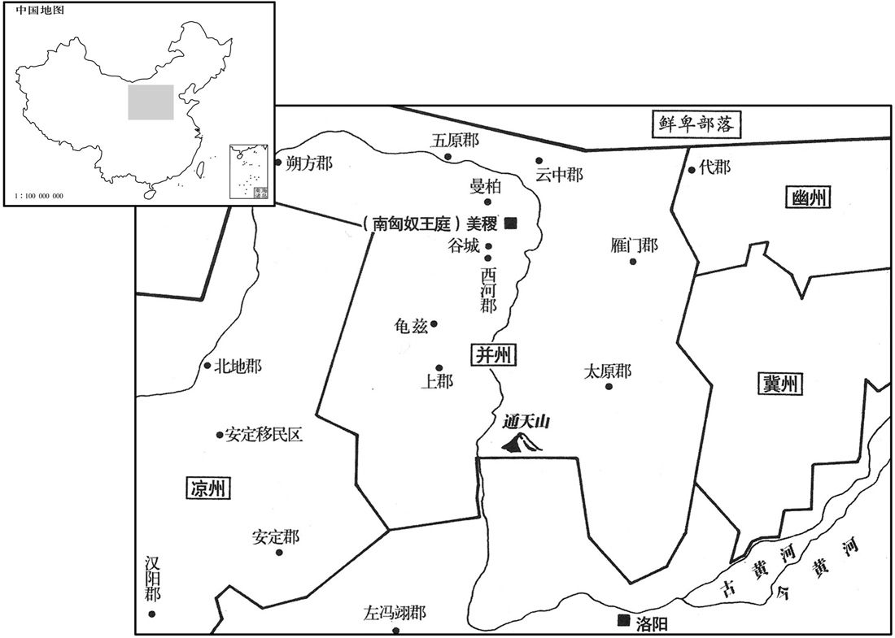
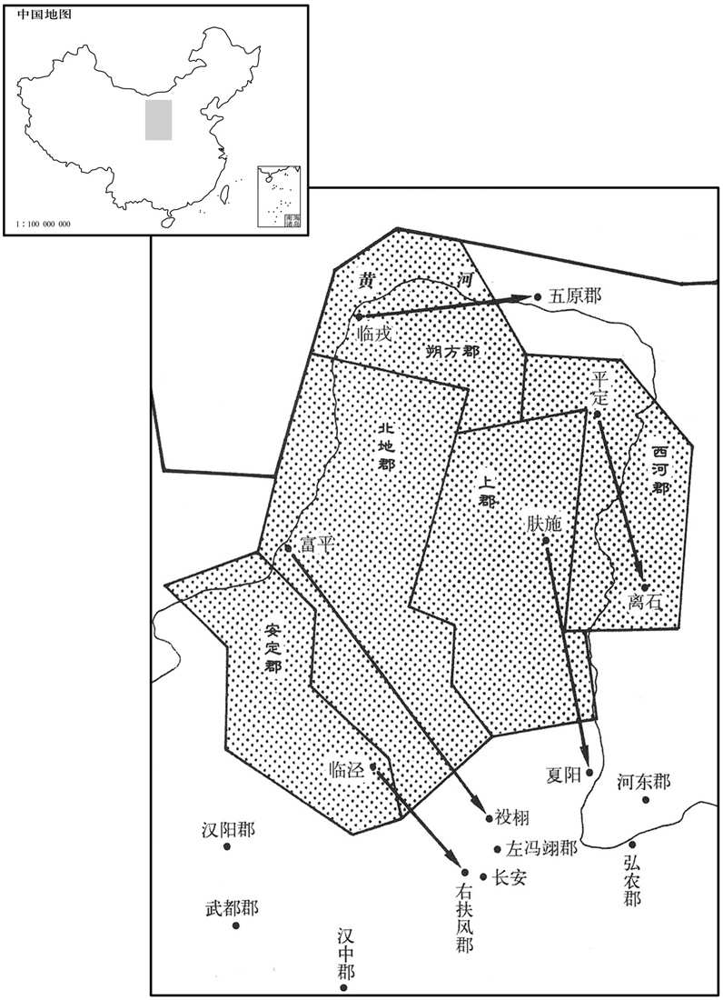
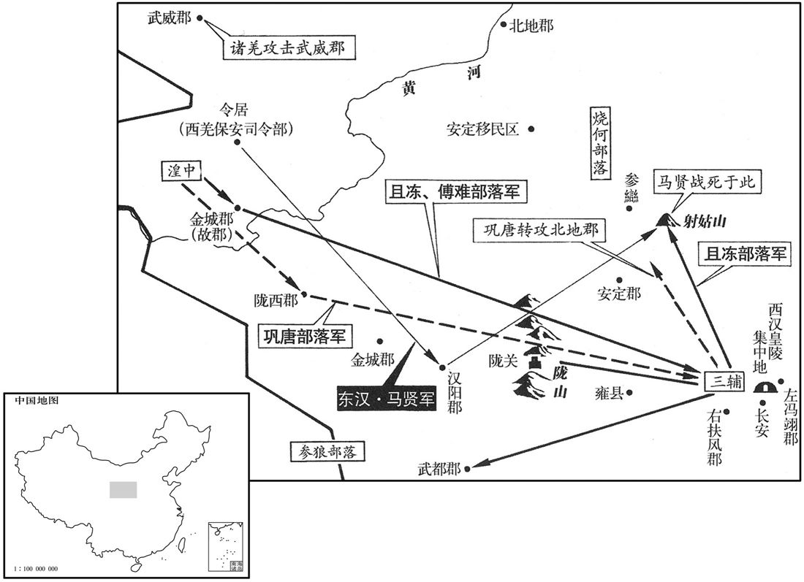
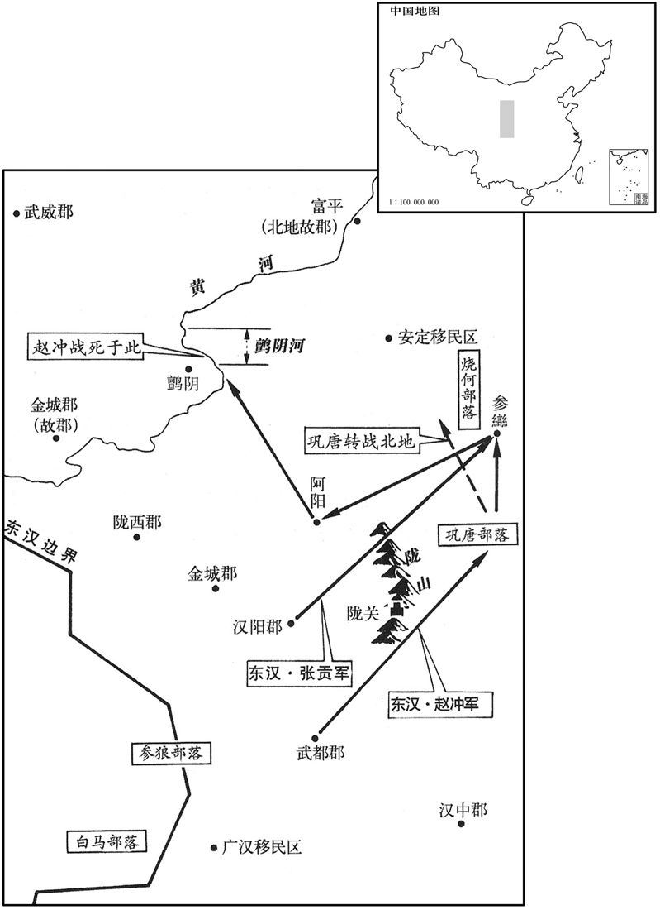
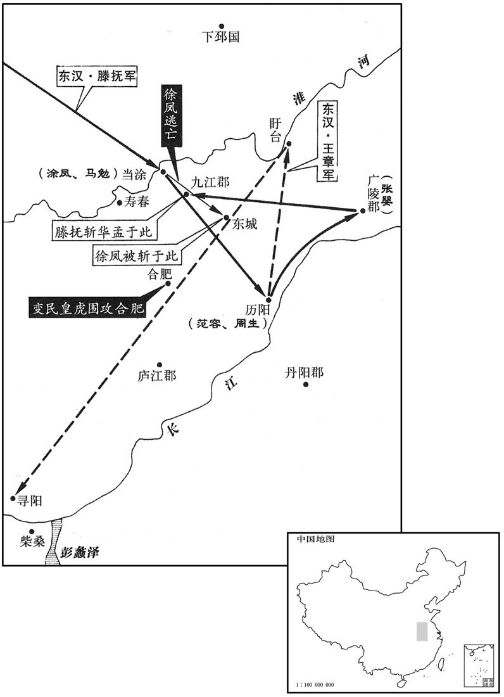

卷次与人物目录 / 卷52
资治通鉴 · 卷第五十二【汉纪四十四】
公元134年至公元145年 · 原文、白话与胡三省注
本页按胡注本编排保存全卷内容。白话采用本站所据译本，未可靠对应的内容另列说明；事件标题用于定位，并非原书文字。
本卷共126段原文，124段有译文对应，2段缺译或待核对。
卷第五十二【汉纪四十四】起阏逢淹茂（甲戌），尽旃蒙作噩（乙酉），凡十二年。
卷首原文与注释
孝顺皇帝下
公元134年 · 汉孝顺皇帝阳嘉三年
阳嘉三年〔（甲戌、一三四）〕
本年事件索引（现代整理）
夏，四月，车师后部司马率后王加特奴〔【章：甲十六行本「奴」下有「等」字；乙十一行本同；孔本同。】〕掩击北匈奴于阊吾陆谷，〔阊，音昌。〕大破之；获单于母。
夏季，四月，汉朝驻车师后王国的车师后部司马，率领后王国国王加特奴，在阊吾陆谷向北匈奴发动突然袭击，大破北匈奴，俘虏了单于的母亲。
五月，戊戌，诏以春夏连旱，赦天下。上亲自露坐德阳殿东厢请雨。〔按范书桓帝纪：德阳殿在北宫掖庭中。〕以尚书周举才学优深，特加策问。举对曰：「臣闻阴阳闭隔，则二气否塞。〔否皮鄙翻。塞，悉则翻。〕陛下废文帝、光武之法，而循亡秦奢侈之欲，内积怨女，外有旷夫。自枯旱以来，弥历年岁，未闻陛下改过之效，徒劳玉尊暴露风尘，诚无益也，〔谓露坐无益。〕陛下但务其华，不寻其实，犹缘木希鱼，欲行求前。〔贤曰：缘木求鱼，孟子之文。韩诗外传曰：夫明镜所以照形，往古所以知今。恶知往古之所以危亡，无异却行而求达于前人也。〕诚宜推信革政，崇道变惑，出后宫不御之女，除太官重膳之费。易传曰：『阳感天不旋日。』〔易稽览图中孚传曰：阳感天不旋日，诸侯不旋时，大夫不过翆。郑玄注云：阳者，天子。为善一日，天立应以善；为恶一日，天立应以恶。一说，不旋时立应之。重，直龙翻。传，直恋翻。〕惟陛下留神裁察！」帝复召举面问得失，举对以「宜慎官人，去贪污，远佞邪。」〔复，扶又翻。去，羌吕翻。远，于愿翻。〕帝曰：「官贪污、佞邪者为谁乎﹖」对曰：「臣从下州超备机密，〔举自冀州刺史征拜尚书。〕不足以别群臣。然公乡大臣数有直言者，忠贞也；〔别，彼列翻。数，所角翻。〕阿谀苟容者，佞邪也。」
五月戊戌（初四），顺帝下诏，因春季和夏季连续大旱，大赦天下。顺帝亲到德阳殿东厢庭院中，露天而坐，祈求上天降雨。因尚书周举才学兼优，顺帝特地就此征询他的意见。周举回答说：“我曾经听说，阴阳闭隔，则二气一定闭塞不通。陛下废弃文帝、光武帝所建立的朴素节俭传统，而因袭促使秦朝灭亡的奢侈欲望，使宫廷内增加了许多怨恨的美女，而宫廷外却增加了许多已到婚龄而不得婚配的男子。自从发生大旱以来，整整过去一年了，而没有听说陛下有改过的表现，徒劳至尊之体露坐风尘，实在无益。陛下只是在问题的表面上下功夫，不去寻找它的实质所在，犹如缘木求鱼，也好比向后倒退，却想前进一样，于事无补。应该诚心诚意地革除弊政，遵守先王制订的规章制度，改变目前奢侈腐化的混乱局面，放走后宫中未曾召幸过的美女，省去御膳房制作奢侈菜肴的费用。《易传》上说：‘天子为善一日，上天立刻以善来回报。’请陛下留意裁夺！”顺帝再次召见周举，当面询问朝政上的得失，周举回答说：“应该慎重地任命官吏，铲除贪污，疏远奸佞。”顺帝又问：“谁是贪官污吏？谁是奸佞之臣？”周举回答说：“我从下面的州刺史府，被擢升到掌管朝廷机密的尚书台，还没有能力辨别群臣。然而，在三公、九卿等朝廷大臣中，凡是多次敢于直言不讳地批评朝政的，是忠贞之臣。而阿谀奉承和随声附和的，则是奸佞之臣。”
太史令张衡亦上疏言：「前年京师地震土裂，裂者，威分；震者，民扰也。窃惧圣思厌倦，制不专己，恩不忍割，与众共威。威不可分；德不可共。愿陛下思惟所以稽古率旧，勿使刑德八柄不由天子，〔周礼：王以八柄驭群臣：一曰爵，以驭其贵；二曰禄，以驭其富；三曰予，以驭其幸；四曰置，以驭其行；五曰生，以驭其福；六曰夺，以驭其贫；七曰废，以驭其罪；八曰诛，以驭其过。〕然后神望允塞，〔塞，悉则翻。〕灾消不至灾！」
太史令张衡也上书说：“去年，京都洛阳发生地震，大地崩裂。土地崩裂象征着权威分割；地震象征着人民受到惊扰。我深恐陛下厌倦处理政务，政令不专由自己决定，或者不忍心割断私恩，导致与众人共享威权。然而，威权是不可分割的，恩德也是不可共有的。但愿陛下考虑古代君主所制定的规章，千万不要使刑、德八种权柄，脱离帝王之手。然后，神圣的威严就获得充实，灾异就消失而不再来了。”
衡以以中兴之后，儒者争学图纬，〔纬，七纬也。七纬者，易纬，稽览图、干凿度、坤灵图、通卦验、是类谋、辩终备也；书纬，璇玑钤、考灵耀、刑德放、帝命验、运期授也；诗纬，推度灾、泛历枢、含神雾也；礼纬，含文嘉、稽命征、斗威仪也；乐纬，动声仪、稽耀嘉、汁国征也；孝经纬，援神契、钩命决也；春秋纬，演孔图、元命包、文耀钩、运斗枢、感精符、合诚图、考异邮、保干图、汉含孳、佑助期、握诚图、潜潭巴、说题辞也。〕上疏言：「春秋元命包有公输班与墨翟，事见战国；又言别有益州，益州之置于汉世。〔贤曰：前书：武帝始置益州。〕又刘向父子领校秘书，阅定九流，亦无谶录。〔贤曰：成、哀时，刘向及子歆为秘书，校定经传、诸子等。九流，谓儒家、道家、阴阳家、法家、名家、墨家、纵横家、杂家、农家，见艺文志；并无谶说。谶，楚谮翻。〕则知图谶成于哀、平之际，皆虚伪之徒以要世取资，〔要，一遥翻。〕欺罔较然，莫之纠禁。且律历、卦候、九宫、风角，〔黄帝命伶伦吹律，大挠作甲子，容成造历，而律历之学传矣。京房分六十四卦，更直日用事，以风雨塞温为候。伏羲之时，龙马负图出于河，戴九履一，左三右七，三四为肩，六八为足，而五居中。伏羲观河图而画八卦。阴阳家谓之九宫，一、六、八为白，二黑、三绿、四碧、五黄、七赤、九紫，至今承用之。又易干凿度曰：太一取其数而行九宫。郑玄注云：太一者，北辰神名也；下行八封之宫，每四乃还于中央。中央者，地神之所居，故谓之丸宫。天数大分以阳出，以阴入，阳起于子，阴起于午，是以太一下九宫从坎宫始。自此而从于坤宫，又自此而从于震宫，又自此而从于巽宫，所以从半矣，还息于中央之宫。既又自此而从于干宫，又自此而从于兑宫，又自此而从于艮宫，又自此而从于离宫，行则周矣。上游息于太一之星，而反于紫宫。行起从坎宫始，终于离宫也。此虽纬书之说，而九宫定位则一也。贤曰：风角，谓候四方四隅之风，以占吉凶。〕数有征效，〔数，所角翻；下同。〕世莫肯学，而竞称不占之书，〔贤曰：谓竞称谶家也。〕譬犹画工恶图犬马而好作鬼魅，诚以实事难形而虚伪不穷也！〔恶，乌路翻。好，呼到翻。魅，音媚。韩子曰：客有为齐王画者，问：「画孰难﹖」对曰：「狗、马最难。」「孰易﹖」曰：「鬼、魅最易。狗、马，人所知也，故难；鬼、魅无形，故易也。」〕宜收藏图谶，一禁绝之，则朱紫无所眩，典籍无瑕玷矣！」
张衡又因为东汉王朝建立以来，儒家学派的学者争相学习《图》、《纬》这种神秘的预言书，于是上书说：“《春秋元命包》一书中，载有公输般和墨翟，他俩的事都发生在战国时期；又提到别有益州，而益州的设置，是在汉代。并且，刘向、刘歆父子主管皇家图书馆，校订群书，查阅审定九家学说时，也没有发现《谶录》这部书。由此可以推断，《图谶》成书于哀帝、平帝之际，都是虚妄之徒用来欺世盗名和骗取钱财的，欺骗的意图非常明显，但朝廷却没有加以查禁。而且，律历、卦候、九宫、风角所作的预测，曾不断应验，世人不肯学习，却争相称赞谶纬之书，正犹如画工厌恶画狗画马，却喜好画鬼怪，确实是因为实在的事物很难画好，而虚无飘渺的东西可以信笔乱画。因此，对《图谶》这些神秘的预言书，朝廷应该加以收缴，一律禁绝，这样，朱色和紫色才不会混淆，圣人典籍也不致受到玷污！”
秋，七月，锺羌良封等复寇陇西、汉阳。〔复，扶又翻。〕诏拜前校尉马贤为谒者，镇抚诸种。〔种，章勇翻。〕冬，十月，护羌校尉马续遣兵击良封，破之。
秋季，七月，钟羌种首领良封等再次进犯陇西郡和汉阳郡。顺帝下诏，任命前任护羌校尉马贤为谒者，负责镇压和安抚诸种羌人。冬季，十月，护羌校尉马续派兵进击良封，将其击破。
十一月，壬寅，司徒刘崎、司空孔扶免，用周举之言也。〔崎，丘宜翻。〕乙巳，以大司农黄尚为司徒，光禄勋河东王卓为司空。
十一月壬寅（十一日），司徒刘崎和司空孔扶，均被免职，这是由于顺帝采纳周举谏言的结果。乙巳（十四日），擢升大司农黄尚为司徒，光禄勋、河东郡人王卓为司空。
耿贵人数为耿氏请，〔为，于伪翻。〕帝乃绍封耿宝子箕为牟平侯。〔耿宝贬死事见上卷安帝延光四年。〕
因耿贵人多次为她的娘家向顺帝说情，于是，顺帝封耿宝的儿子耿箕继承其父为牟平侯。
公元135年 · 汉孝顺皇帝阳嘉四年
四年〔（乙亥、一三五）〕
本年事件索引（现代整理）
春，北匈奴呼衍王侵车师后部。帝令敦煌太守发兵救之，不利。〔敦，徒门翻。〕
春季，北匈奴呼衍王侵犯车师后王国，顺帝命敦煌太守发兵救援，战事不利。
二月，丙子，初听中宫得以养子袭爵。〔曹操阶之，遂移汉祚，其所由来渐矣。〕初，帝之复位，宦官之力也，〔事见上卷延光四年。〕由是有宠，参与政事。〔与，读曰预。〕御史张纲上书曰：「窃寻文、明二帝，德化尤盛，中官常侍，不过两人，近幸赏赐，裁满数金，惜费重民，故家给人足。而顷者以来，无功小人，皆有官爵，非爱民重器、承天顺道者也。」书奏，不省。〔省，悉景翻。〕纲，皓之子也。〔张皓见五十卷安帝延光三年。〕
二月丙子（十六日），首次允许宦官以养子继承爵位。当初，顺帝之所以能够恢复帝位，是靠宦官的力量，因此，宦官得到皇帝的庞信，参与朝廷的政事。御史张纲上书说：“据我考察，文帝和明帝，德行教化，最有成就。而当时的中常侍不过二人，对宠爱亲信的赏赐，不过黄金数斤。珍惜经费，关心人民，所以，百姓家家富足。可是，近几年来，没有功劳的小人，都得到官禄爵位，这不是爱护人民，重视国家，顺应天道的作法。”奏章呈上后，顺帝不理。张纲，即张皓的儿子。
旱。
发生旱灾。
谒者马贤击锺羌，大破之。
谒者马贤进击并大破钟羌种人。
夏，四月，甲子，太尉施延免。戊寅，以执金吾梁商为大将军，故太尉庞参为太尉。〔庞，皮江翻。〕
夏季，四月甲子（初五），术尉施延被免官。戊寅（十九日），擢升执金吾梁商为大将军，任命前任太尉庞参为太尉。
商称疾不起且一年；帝使太常桓焉奉策就第即拜，商乃诣阙呙命。〔杜佑曰：后汉策拜诸王侯、三公之仪：百官会，立定，谒者引光禄勋前，谒者引当拜者前，伏殿下。光禄前一拜，举手曰：「制诏，其以某为某。」读策书毕，拜者称臣，再拜。尚书郎以玺印绶付侍御史，前面立受印玺绶，当受策者拜顿首，三赞。谒者曰：「某王臣某新封，某公某初除，谢。」中谒者报，「谨谢。」赞者立曰：「皇帝为公兴。」重坐。受策者拜谢，起，就位。礼毕。自汉以来惟卫青以有即军中拜大将军，未闻有就第即拜者也，况以此异数加之后父乎！〕商少通经传，谦恭好士，〔少，诗沼翻。好，呼到翻；下同。〕辟汉阳巨览、〔巨，姓；览，名。〕上党陈龟为掾属，〔掾，余绢翻。〕李固为从事中郎，杨伦为长史。
梁商称病不起将近一年。于是，顺帝命太常桓焉，捧着任命策书到梁商家中，要拜授他为大将军，梁商这才到皇宫接受任命。梁商自幼通晓儒家的经传，谦虚恭谨，喜爱人才，他延聘汉阳郡人巨览、上党郡人陈龟为掾属，李固为从事中良，杨伦为长史。
李固以商柔和自守，不能有所整裁，乃奏记于商曰：「数年以来，灾怪屡见。〔见，贤遍翻。〕孔子曰：『智者见变思形，愚者怪讳名。』〔范书李固传「形」作「刑」。此二语盖亦本之纬书。〕天道无亲，可为祗畏。〔贤曰：祗，敬也。言天无亲疏，惟善是与，可敬而畏也。〕诚令王纲一整，道行忠立，明公踵伯成之高，〔庄子曰：伯成子高，唐、虞时为诸侯；至禹，去而耕于野。〕全不朽之誉，岂与此外戚凡辈耽荣好位者同日而论哉！」商不能用。
李固因梁商为人柔弱温和，能守住自己，但没有能力整顿法纪，于是向梁商上书说：“数年以来，灾变怪异不断出现。孔子说：‘聪明的人见到灾变，考虑它形成的原因；愚蠢的人见到怪异，却假装没有看见。’天道不论亲疏，所以可敬可畏。如果能够整顿朝廷纲纪，推行正道，选立忠良，则您就能继伯成之后，建立崇高的功业，成全不朽的荣誉，那些沉湎于荣华富贵，追求高位的一般外戚，怎能与你同日而语？”梁商不能采用。
秋，闰八月，丁亥朔，日有食之。
秋季，闰八月丁亥朔（初一），出现日食。
冬，十月，皇桓寇云中。度辽将军耿晔追击，不利。十一月，乌桓围晔于兰池城；〔续汉志：云中郡沙南县有兰池城。〕发兵数千人救之，乌极乃退。
冬季，十月，乌桓侵犯云中郡。度辽将军耿晔率军追击，不利。十一月，乌桓将耿晔包围在兰池城，东汉朝廷派兵数千人前去救援，于是乌桓解围而去。
十二月，丙〔【章：甲十六行本「丙」作「甲」；乙十一行本同；张校同。】〕寅，京师地震。
十二月丙寅（疑误），京都洛阳发生地震。
公元136年 · 汉孝顺皇帝永和元年
永和元年〔（丙子、一三六）〕
春，正月，己巳，改元，赦天下。
春季，正月己巳（十五日），改年号。大赦天下。
冬，十月，丁亥，承福殿火。
冬季，十月丁亥（初七），承福殿发生火灾。
十一月，丙子，太尉庞参罢。
十一月丙子（二十七日），太尉庞参被免职。
十二月，象林蛮夷反。〔象林县，属日南郡。晋、宋以下为林邑国。〕
十二月，象林县蛮夷起兵反叛。
乙巳，以前司空王龚为太尉。
龚疾宦官专权，上书极言其状。诸黄门使客诬奏龚罪；上命龚亟自实。李固奏记于梁商曰：「王公以坚贞之操，横为谗佞所构，〔横，户孟翻。〕众人闻知，莫不叹栗。夫三公尊重，无诣理诉冤之义，〔哀帝时，丞相王嘉召诣廷尉，主簿曰：「将相不对理陈冤，相踵以为故事，君侯宜引决。」〕纤微感慨，辄引分决，是以旧典不有大罪，不至重问。〔贤曰：大臣狱重，故曰重问。成帝时，丞相薛宣、御史大夫翟方进有罪，上使五二千石杂问。音义云：大臣狱重，故以二千石五人同问之。〕王公卒有他变，〔卒，读曰猝。〕则朝廷获害贤之名，群臣无救护之节矣！语曰：『善人在患，饥不及餐。』〔言当速救之也。〕斯其时也！」商即言之于帝，事乃得释。
乙巳（二十六日），任命前任司空王龚为太尉。王龚痛恨宦官专权，上书极力陈述他们的罪状。黄门宦官们指使门客，向朝廷诬告王龚有罪。顺帝命王龚及早亲自讲明真实情况。李固向梁商上书说：“王龚具有坚贞的节操，无端遭受奸佞的陷害，大家听说这个消息，无不为之叹息恐惧。以三公的尊严地位，没有前往司法部门为自己申辩诉冤的道理。即令他对朝廷稍有不满，往往让他自杀，所以，按照惯例，没有大逆不道之罪，不至于审问三公。假如王龚突然发生其他意外，则朝廷就会蒙受谋害贤能的恶名，群臣就没有营救和保护忠良的气节了！俗话说：‘好人正处在患难之中，我们即使再饿，也顾不上吃饭。’这正是救人的时候。”于是，梁商立即向顺帝进言，事情才告平息。
是岁，以执金吾梁冀为河南尹。冀性嗜酒，逸游自恣，居职多纵暴非法。父商所亲客雒阳令吕放以告商，商以让冀。冀遣人于道刺杀放，〔刺，七亦翻。〕而恐商知之，乃推疑放之怨仇，〔推，吐雷翻。恶自冀出，欲嫁之他人，故托其辞，疑放之怨仇为之。〕请以放弟禹为雒阳令，使捕之；〔贤曰：安慰放家，欲以灭口。余谓贤说非也。冀请于商，以放弟为令，谓必急于捕贼，而阴使禹灭其兄之宗亲宾客以快己忿耳。〕尽灭其宗、亲、宾客百余人。
本年，任命执金吾梁冀为河南尹。梁冀生性喜好饮酒，纵情作乐，为所欲为，居官多有暴虐不法的行为。其父梁商所亲信的门客、洛阳县令吕放，将上述情况报告梁商，梁商因此责备了梁冀。梁冀怀恨在心，竟派人在道路上刺死了吕放。而他又恐怕被父亲发觉，于是把罪行推到吕放的仇人身上，并请求任命吕放的弟弟吕禹为洛阳县令，让他来逮捕刺杀吕放的凶手。结果，吕禹将吕放的宗族、亲戚和宾客等一百余人全部诛杀。
武陵太守上书，以蛮痍率服，〔言相率而来服。〕可比汉人，增其租赋。议者皆以为可。尚书令虞诩曰：「自古圣王，不臣异俗。先帝旧典，贡赋多少，所由来久矣；〔汉兴，令武陵诸蛮，大人岁输布一匹，小口二丈，是谓之賨布。〕今猥增之，必有怨叛。计其所得，不偿所费，必有后悔。」帝不从。澧中、溇中蛮各争贡布非旧约，〔溇，郎侯翻。〕遂杀乡吏，举种反。〔种，章勇翻。〕
武陵郡太守向朝廷上书，认为武陵郡内的蛮夷已归服了汉朝，可以比照汉人，增加他们的田租和赋税。参加集议论的人都认为可行，但尚书令虞诩却说：“自古以来，圣明的君王对风俗习惯跟我们不同的民族，不当作自己的臣民。先帝已制定了规章，明确规定武陵蛮夷应缴纳的赋税额，时间已经很久了。而今滥行增加，必然引起他们的怨恨和反叛，计算所能得到的，抵偿不了所耗费的，定会后悔。”顺帝没有采纳。其后，中和中蛮人各因所征收的贡布不是原来规定的数量而起来抗争，于是杀掉征收赋税的乡吏，全族反叛。
公元137年 · 汉孝顺皇帝永和二年
二年〔（丁丑、一三七）〕
本年事件索引（现代整理）
春，武陵蛮二万人围充城，八千人寇夷道。〔贤曰：充县，属武陵郡，故城在澧州崇义县东北。充，音冲。夷道，属南郡。〕
春季，武陵郡蛮族二万人包围充城，八千人攻打夷道。
二月，广汉属国都尉击破白马羌。〔安帝改蜀郡北部都尉为广汉属国都尉，别领阴平、甸氐、刚氏三道，属益州。〕
二月，广汉属国都尉击破白马羌。
帝遣武陵太守李进击叛蛮，破平之。进乃简选良吏，抚循蛮夷，郡境遂安。
顺帝派武陵郡太守李进率军进击反叛的蛮人，将其击破平定。于是，李进选用贤良的官吏，安抚蛮人，郡境之内方告安宁。
三月，〔【章：甲十六行本「月」下有「乙卯」二字；乙十一行本同；张校同；退斋校同。】〕司空王卓薨。丁丑，以光禄勋郭虔为司空。〔考异曰：袁书作「干」，今从范书。〕
三月，司空王卓去世。丁丑（三十日），擢升光禄勋郭虔为司空。
夏，四月，丙申，京师地震。
夏季，四月丙申（十九日），京都洛阳发生地震。
五月，癸丑，山阳君宋娥坐构奸诬罔，收印绶，归里舍。黄龙、杨佗、孟叔、李建、张贤、史泛、王道、李元、李刚等九侯坐与宋娥更相赂遗，〔更，工衡翻。遗，于季翻。〕求高官增邑，并遣就国，灭租四分之一。〔考异曰：孙程传云：「龙等诬罔曹腾、孟贲」，按梁商传，诬罔腾、贲者张逵等，非龙等也。〕
五月癸丑（初六），山阳君宋娥因勾结奸佞，以不实之辞诬陷他人而坐罪，顺帝下令收缴她的印信，并将她遣送回乡。黄龙、杨佗、孟叔、李建、张贤、史、王道、李元、李刚等九侯，因与宋娥互相贿赂，谋求高官和增加食邑，一律遣回他们的封国，减少所享用的封国租税的四分之一。
象林蛮区怜等〔区，鸟侯翻；今广中犹有此姓。姓谱云：今长沙有此姓，音岂俱翻。〕攻县寺，杀长吏。交趾刺史樊演发交趾、九真兵万余人救之；兵士惮远役，秋，七月，二郡兵反，攻其府。府虽击破反者，而蛮势转盛。
象林郡蛮族首领区怜等攻打所在县的官府，杀害地方官吏。交趾刺史樊演征发交趾郡和九真郡兵一万余人，前往救援。由于士兵害怕远征，秋季，七月，两郡士兵反叛，攻打太守府。太守府虽将反叛士兵击败，然而蛮人的势力转强。
冬，十月，甲申，上行幸长安。扶风田弱荐同郡法真博通内、外学，〔东都诸儒以七纬为内学，六经为外学。〕隐居不仕，宜就加衮职。〔贤曰：毛诗曰：衮职有阙。谓三公也。〕帝虚心欲致之，前后四征，终不屈。友人郭正称之曰：「法真名可得闻，身难得而见。逃名而名我随，避名而名我追，可谓百世之师者矣！」真，雄之子也。〔法雄见四十九卷安帝永初四年。〕
冬季，十月甲申（初十），顺帝巡视长安。扶风人田弱向顺帝推荐同郡人法真，称法真精通儒家的内学和外学，即《七纬》和《六经》，隐居乡里，不肯出来做官，应就地任命他为三公。顺帝非常虚心地想请到他，前后四次征召，但法真始终不肯屈从。他的朋友郭正称赞说：“法真，可以听见他的名，却很难见到他这个人。他越是逃避名声，名声越是随着他，越是躲开名声，名声越是追着他，他这个人真可以说是百世之师了！”法真，即法雄的儿子。
丁卯，京师地震。
丁卯（疑误），京都洛阳发生地震。
太尉王龚以中常侍张昉等专弄国权，欲奏诛之。宗亲有以杨震行事谏之者，〔杨震事见五十卷安帝延光三年。〕龚乃止。
太尉王龚因中常侍张等独揽朝廷大权，打算提出弹劾，要求皇帝诛杀他们。后由于宗族和亲戚中有人用杨震的遭遇进行劝阻，王龚这才作罢。
十二月，乙亥，上还自长安。
十二月乙亥（初二），顺帝从长安返回京都洛阳。
公元138年 · 汉孝顺皇帝永和三年
三年〔（戊寅、一三八）〕
本年事件索引（现代整理）
春，二月，乙亥，京师及金城、陇西地震，二郡山崩。
春季，二月乙亥（初三），京都洛阳及金城郡、陇西郡发生地震，二郡发生山崩。
夏，闰四月，己酉，京师地震。
夏季，闰四月已酉（初八），京都洛阳发生地震。
五月，吴郡丞羊珍反，功郡府；太守王衡破斩之。
五月，吴郡丞羊珍反叛，攻打郡太守府。太守王衡将叛军击败，并斩杀羊珍。
侍御史贾昌与州郡并力讨区怜，不潜，为所攻围岁余，兵谷不继。帝召公卿百官及四府掾属〔大将军府掾属二十九人，太尉府二十四人，司徒府三十一人，司空府二十九人。〕问以方略；皆议遣大将，发荆、扬、兖、豫四万人赴之。李固驳曰：「若荆、扬无事，发之可也。今二州盗贼盘结不散，〔二州、谓荆、扬也。〕武陵、南郡蛮夷未辑，长沙、桂阳数被征发，如复扰动，〔数，所角翻。被，皮义翻。复，扶又翻；下同。〕必更生患，其不可一也。又，兖、豫之人卒被征发，〔卒，读曰猝。〕远赴万里，无有还期，诏书迫促，必致叛亡，其不可二也。南州水土温暑，加有瘴气，〔瘴，之亮翻。度岭而南，瘴气甚重，炎热蒸郁之所生也，中之者辄死。〕致死亡者十必四五，其不可三也。远涉万里，士卒疲劳，比至岭南，〔比，必寐翻，及也。〕不复堪，其不可四也。军行三十里为程，而去日南九千余里，三百日乃到，计人禀五升，〔贤曰：古升小，故曰五升也。禀，给也。〕用米六十万斛，不计将吏驴马之食，但负甲自致，费便若此，其不可五也。设军所在，死亡必众，既不足御敌，当复更发，此为刻割心腹以补四支，其不可六也。九真、日南相去千里，发其吏民犹尚不堪，何况乃苦四州之卒以赴万里之艰哉！其不可七也。前中郎将尹就讨益州叛羌，益州谚曰：『虏来尚可，尹来杀我。』后就征还，以兵付刺史张乔；乔因其将吏，旨月之间破殄寇虏。〔事见四十九卷安帝元初二年，止五卷五年。〕此发将无益之效，〔将，即亮翻。〕州郡可任之验也。宜更选有勇略仁惠任将帅者，以为刺史、太守，悉使共住交趾。今日南兵单无谷，〔言孤军处叛蛮之中，又乏粮也。〕守既不足，战又不能，可一切徙其吏民，北依交趾，事静之后，乃命归本；还募蛮夷使自相攻，转输金帛以为其资；有能反间致头首者，〔间，古苋翻。头首，谓诸蛮渠帅也。〕许以封侯裂土之赏。故并州刺史长沙祝良，性多勇决，又南阳张乔，前在益州有破虏之功，皆可任用。昔太宗就加魏尚为云中守，〔魏尚见十四卷文帝十四年；就加事未见。守，式又翻；下同。〕哀帝即拜龚舍为泰山守；〔前书：龚舍，楚人，初征为谏大夫，病免；复征为博士，又病去。顷之，哀帝遣使即楚拜舍为泰山太守。〕宜即拜良等，便道之官。」四府悉从固议，即拜祝良为九真太守，张乔为交趾刺史。乔至，开示慰诱，并皆降散。良到九真，单车入贼中，设方略，招以威信，降者数万人，皆为良筑起府寺。由是岭外复平。〔为，于伪翻。复，扶又翻。〕
侍御史贾昌和州郡官府合力讨伐区怜，没有取胜，反而受到区怜的围攻，过了一年多，援兵和粮秣都无法接济。顺帝召集三公、九卿、百官以及四府掾属询问对策。大家都主张派遣大将，征发荆州、扬州、兖州、豫州等四州士兵共四万人，前往交趾增援。李固反驳说：“如果荆州和扬州太平无事，便可以征发二州的士兵。而今，二州的盗贼，犹如磐石一样结合在一起，不肯离散；武陵郡和南郡的蛮族反叛，还没有安定。而长沙郡和桂阳郡的士兵，已被征发多次，如果再次征发，骚扰人民，必然发生新的变乱，这是不可征发的第一个理由。再者，兖州和豫州的人民，突然被征入伍，远征万里之外，没有归期，而诏书逼迫和催促急如星火，必然导致叛乱和逃亡，这是不可征发的第二个理由。南方州郡，水土潮湿，气候炎热，再加上瘴气，以致死亡的人必占十分之四五，这是不可征发的第三个理由。长途跋涉，行军万里，士卒疲劳不堪，等军队到达岭南，士卒已经没有战斗能力，这是不可征发的第四个理由。按照规定的正常速度，每天行军三十里，而离日南郡有九千余里，需要行军三百天才可到达，按每人每天口粮五升计算，需要用米六十万斛，还不包括将领、军吏的口粮和驴、马的饲料，仅士兵自己携带，费用就如此巨大，这是不可征发的第五个理由。军队战斗的地方，死亡的人一定很多，即然抵御不了敌人的进攻，就将再次征调援兵，这就犹如挖割心腹去补四肢，这是不可征发的第六个理由。九真和日南，两郡相隔仅一千里，征发当地的吏民，尚且不堪忍受，更何况征发四州的士兵，让他们忍受万里远征的痛苦？这是不可征发的第七个理由。从前，朝廷派中郎将尹就去讨伐益州的叛羌，益州有谚语说：“叛羌来了，还可；尹就来了，杀我。”其后，将尹就调回京都，把军队交付给益州刺史张乔。张乔依靠原有军队的将领和军吏，一个月之内，便将叛羌击破歼灭。这证明由朝廷派遣大将没有益处，而州郡地方官吏却足以胜任。应该重新选派即勇敢而又有谋略，即仁惠而又可胜任将帅的人，担任州刺史和郡太守，命他们都驻守在交趾郡。而今，日南郡兵力单薄，又无粮秣，守既守不住，战又不能战，可以暂时放弃它，先把官吏和人民迁徙到北方的交趾郡，等到乱事平定之后，再命他们返回日南郡。另外，招募和收买蛮夷，让他们互相攻杀，朝廷 则供给金帛资助他们。如果有能够使用反间计离间敌人内部、斩杀蛮夷首领的，朝廷则许以封侯，赐以食邑。前任并州刺史、长沙人祝良，勇敢果断；南阳人张乔，从前在益州建立过平定叛羌的功勋，他们都可以受到信任和重用。过去，汉文帝就在原地任命魏尚为云中郡太守，哀帝命使者到楚地拜授龚舍为泰山郡太守。应该就在原地拜授祝良等人，命他们直接前往交趾郡任职。”四府完全同意李固的意见。于是，顺帝在原地任命祝良为九真郡太守，张乔为交趾州刺史。张乔到任以后，对叛蛮开诚布公地进行安抚和诱劝，叛军全部投降或解散。祝良到九真郡之后，单独乘车进入叛军大营，给他们指出生路，用威力和信誉进行招抚，叛军投降的有数万人，他们一同为祝良修筑郡太守府的官舍。从此，五岭以外地区恢复和平。

秋，八月，己未，司徒黄尚免。九月，己酉，以光禄勋长沙刘寿为司徒。
秋季，八月己未（二十日），司徒黄尚被免官。九月己酉（疑误），擢升光禄勋、长沙人刘寿为司徒。
初，尚书令左雄荐冀州刺史周举为尚书；既而雄为司隶校尉，举故冀州刺史冯直任将帅。直尝坐臧受罪，〔臧，古赃字通。〕举以此劾奏雄。〔劾所举非其人也。劾，户概翻，又户得翻。〕雄曰：「诏书使我选武猛，不使君选清高。」举曰：「诏书使君选武猛，不使君选贪污也！」雄曰：「进君，适所以自伐也。」举曰：「昔赵宣子任韩厥为司马，厥以军法戮宣子仆，宣子谓诸大夫曰：『可贺我矣！吾选厥也任其事。』〔秦、晋战于河曲，赵宣子将中军，韩厥为司马。宣子使以其乘车干行，韩厥戮英仆。众曰：「韩厥必不没矣，其主朝升之而暮戮其车。」宣子谓诸大夫曰：「可贺我矣！吾举厥也任其事，吾今乃知免于戾矣！」任，音壬。〕今君不以举之不才误升诸朝，不敢阿君以为君羞；不寤君之意与宣子殊也。」雄悦，谢曰：「吾尝事冯直之父，又与直善；今宣光以此奏吾，是吾之过也！」〔周举，字宣光。〕天下益以此贤之。〔闻过而服，天下以此益贤左雄。讳过者为何如邪！〕
最初，尚书令左雄，推荐冀州刺史周举为尚书。接着，左雄任司隶校尉，又推荐前任冀州刺史冯直有将帅之才。因冯直曾经犯过贪污罪，周举便就此弹劾左雄。左雄说：“圣旨让我推荐武猛的人才，不是让我推荐品行清白高洁的人才。”周举回答说：“圣旨是让你推荐武猛的人才，但也没有教你推荐犯有贪污罪的人。”左雄又说：“我推荐了您，反受您的打击，恰恰是自作自受。”周举回答说：“过去，赵宣子任用韩厥为司马，韩厥却用军法将赵宣子的奴仆杀掉，赵宣子对各位大夫说：‘你们应该向我祝贺，我推荐韩厥，他果然尽忠职守。’而今，承蒙您不嫌弃我没有才能，而误将我推荐到朝廷，所以，我不敢迎合您，让您蒙羞。可是，想不到您的看法和赵宣子完全不一样。”左雄大为高兴，向周举道歉说：“我曾经做过冯直父亲的部属，又和冯直是好朋友。如今你因此而弹劾我，正是我的过错。”从此，天下的人对左雄更为尊敬。
是时，宦官竞卖恩势，〔挟势市恩，以此自鬻也。〕唯大长秋良贺清俭退厚。〔春秋郑穆公子子良，后为良氏。贤曰：谦退而厚重也。余谓退厚者，不与侪辈争进趣，竞浮薄也。〕及诏举武猛，贺独无所荐。帝问其故，对曰：「臣生自草茅，长于宫掖，〔长，知两翻。〕既无知人之明，又未尝交加士类。昔卫鞅因景监以见，有识知其不终。〔事见二卷周显王三十一年。〕今得臣举者，匪荣伊辱，〔言不足为荣，适以为辱也。考异曰：宦者传云：「阳嘉中，诏举武猛，良贺独无所荐。」按此诏盖误以永和为阳嘉也。〕是以不敢！」帝由是赏之。
这时，宦官倚仗皇帝的庞信，争相卖弄权势，唯有大长秋良贺清廉淡泊，谦让敦厚。等到皇帝下诏，命各人推荐武力勇猛的人才时，唯独良贺没有举荐。顺帝问他什么原因，良贺回答说：“我出生于荒野民间，在宫廷中长大，既没有识别人的聪明，又没有和有才能的人士交往。过去，卫鞅由宦官景监推荐，有识之士就预见到他没有好结果。现在，能得到我推荐的人，他不仅不会引以为荣，反而觉得是一种耻辱。因此我不敢举荐。”顺帝从此赏识良贺。
丙戌，令大将军、三公举刚毅、武猛，谋谟任将帅者各二人，特进、卿、校尉各一人。〔校，户教翻。〕
丙戌（十七日），顺帝命大将军、三公向朝廷举荐刚毅、武猛、有谋略，可以担任将帅的人才，每人推荐二人；特进、九卿、校尉，每人推荐一人。
冬，十月，烧当羌那离等三千余骑寇金城，校尉马贤击破之。
冬季，十月，烧当羌人首领那离等，率领三千余骑兵，侵犯金城郡，护羌校尉马贤将其击破。
十二月，戊戌朔，日有食之。
十二月戊戌朔（初一），出现日食。
大将军商以小黄门南阳曹节等用事于中，遣子冀、不疑与为交友；而宦官忌其宠，反欲陷之。中常侍张逵、蘧政、杨定等〔蘧，姓也。卫有大夫蘧伯玉。〕与左右连谋，共谮商及中常侍曹腾、孟贲，云「欲征诸王子，图议废立，请收商等案罪。」帝曰：「大将军父子，我所亲，腾、贲；我所爱，必无是，但汝曹共妒之耳。」〔妒，与勡同。〕逵等知言不用，惧迫，〔言既不用，惧祸且及也。〕遂出，矫诏收缚腾、贲于省中。帝闻，震怒，敕宦者李歙急呼腾、贲释之；收逵等下狱。〔歙，许及翻。下，遐稼翻。〕
大将军梁商因为小黄门、南阳人曹节等在宫中当权，就命自己的儿子梁冀、梁不疑和曹节等结交。而其他宦官忌妒曹节受宠，反而想要陷害他。中常侍张逵、蘧政、杨定等，和他们左右的亲信勾结密谋，一同向顺帝诬告梁商和中常侍曹腾、孟贲，说：“梁商等准备征召诸王的儿子前来京都洛阳，图谋废黜皇上，另立新的皇帝，请将梁商等收捕治罪。”顺帝说：“大将军父子是我所亲信的，曹腾、孟贲是我所宠爱的，一定没有这回事，只是你们都忌妒他们罢了。”张逵等知道他们的谗言没有被顺帝采纳，恐惧杀身大祸降临到自己头上，于是退下，假传圣旨，在宫中逮捕曹腾和孟贲。顺帝闻讯大发雷霆，命宦官李歙急速传命释放曹腾、孟贲。并将张逵等人逮捕下狱。
公元139年 · 汉孝顺皇帝永和四年
四年〔（己卯、一三九）〕
春，正月，庚辰，逵等伏诛；事连弘农太守张凤、安平相杨皓，皆坐死；辞所连染，延及在位大臣。商惧多侵枉，乃上疏曰：「春秋之义，功在元帅，罪止首恶。〔春秋左氏传：晋却克帅师败齐师于濯；师归，范文子后入，曰：「师有功，国人喜以逆之；先入，必属耳目焉，是代帅受名也，故不敢。」虞师、晋师灭下阳，公羊传曰：虞，微国也，曷为序于大国之上﹖使虞首恶也。帅，所类翻。〕大狱一起，无辜者众，死囚久系，纤微成大，〔贤曰：言久系之，则细微之事牵引以成大也。〕非所以顺迎和气，平政成化也。宜早讫竟，以止逮捕之烦。」〔谓孟春之月，当行庆施惠，顺天地生物之心，以迎和气，不宜使狱事枝蔓。贤曰：逮，及也；辞所连及，即追捕之也。〕帝纳之，罪止坐者。
春季，正月庚辰（十三日），张逵等人伏法被诛。弘农郡太守张凤和 安平国相杨皓，因被张逵等人牵连，都坐罪处死。受口供牵连的，还涉及到在位的朝廷大臣。梁商担心冤枉许多无辜者，于是上书说：“按照《春秋》上面所讲的道理，功勋归于元帅，罪恶仅惩办首恶。大狱一起，无辜受害的人将会很多，身犯死罪的囚犯长久关押的监狱，细微小事会牵连成大事，这样不能顺应和气，治平政事，成就教化。应该及早结案，停止逮捕的烦扰。”顺帝采纳，治罪仅限于当事人犯。
二月，帝以商少子虎贲中郎将不疑为步兵校尉。商上书辞曰：「不疑童孺，猥处成人之位。〔处，昌吕翻。〕昔晏平仲辞鄁殿以安〔【章：甲十六行本「安」作「守」；乙十一行本同；孔本同。】〕其富，〔左传：齐讨庆封，与晏子鄁殿，其鄙六十；弗受。子尾曰：「富，人之所欲也，何故弗受﹖」对曰：「庆氏之邑足欲，故亡。吾邑不足欲也，益之以鄁殿，乃足欲，亡无日矣！不受鄁殿，非恶富也，恐失富也。」鄁，蒲对翻。殿，多荐翻，又如字。〕公仪休不受鱼飧以定其位；〔公仪休为鲁相；客有遗相鱼者，相不受。客曰：「闻君嗜鱼，遗君鱼，何故不受也﹖」相曰：「以嗜鱼，故不受也。今为相能自给鱼；受鱼而免，谁复给我鱼者！故不受也。」〕臣虽不才，亦愿固福禄于圣世！」上乃以不疑为侍中、奉车都尉。〔梁商之让，通经、传之力也。〕
二月，顺帝任命梁商的小儿子虎贲中郎将梁不疑为步兵校尉。梁商上书辞让说：“梁不疑是个孩子，竟担任成人才可以担任的官职。过去，晏婴辞让殿的土地，用来保全自己的财富；公仪休不接受别人的赠鱼，用来保全自己的地位。我虽然没有才能，也希望在圣主之世保全我的财富和地位。”于是，顺帝任命梁不疑为侍中、奉车都尉。
三月，乙亥，京师地震。
三月乙亥（初九），京都洛阳发生地震。
烧当羌郡离等复反；〔复，扶又翻；下同。〕夏，四月，癸卯，护羌校尉马贤讨斩之，获首虏千二百余级。
烧当羌人首领那离等再次反叛。夏季，四月癸卯（初八），护羌校尉马贤率军进行讨伐，将那离斩首，并斩杀和俘虏一千二百余人。
戊午，赦天下。
戊午（二十三日），大赦天下。
五月，戊辰，封故济北惠王寿子安为济北王。〔去年济北王多薨，无子；今以安绍封。范书列传作「安国」，此从帝纪。济，子礼翻。〕
五月戊辰（初三），将已故济北惠王刘寿的儿子刘安封为济北王。
秋，八月，太原旱。
秋季，八月，太原郡发生旱灾。
公元140年 · 汉孝顺皇帝永和五年
五年〔（庚辰、一四○）〕
本年事件索引（现代整理）
春，二月，戊申，京师地震。
春季，二月戊申（十七日），京都洛阳发生地震。
南匈奴句龙王吾斯、车纽等反，〔句，古侯翻。车，尺遮翻。〕寇西河；招诱右贤王合兵围美稷，杀朔、方弋郡长吏。夏，五月，度辽将军马续与中郎将梁并等〔此护匈奴中郎将也。〕发边兵及羌、胡合二万余人掩击，破之。吾斯等复更屯聚，攻没城邑。天子遣使责让单于；单于本不预谋，乃脱帽避帐，诣并谢罪。并以病，征五原太守陈龟代为中郎将。龟以单于不能制下，〔贤曰：吾斯等攻没城邑，单于虽不预谋，然不能制下，即是不堪其任。〕逼迫单于及其弟左贤王皆令自杀。龟又欲徙单于近亲于内郡，而降者遂更狐疑。龟坐下狱，免。〔降，户江翻；下同。龟所施行，必有未究其方略者，而遽�之K也。下，遐稼翻。〕
南匈奴句龙王吾斯和车纽等反叛，攻打西河郡，并引诱右贤王，合兵包围美稷，杀害朔方郡、代郡的地方官吏。夏季，五月，度辽将军马续和护匈奴中郎将梁并等征发边防军及羌人、胡人的军队，共二万余人，向南匈奴叛军发动突然袭击，将其击破。吾斯等收拾残部，又重新聚集起来，攻陷城邑。顺帝派使者严辞谴责南匈奴单于。单于休利本来没有参与吾斯等人的反叛阴谋，但因受到朝廷的谴责，感到惶恐不安，于是摘下帽子，离开营帐，亲自跑到梁并那里去认罪。正在这时，梁并因病被朝廷召回京都洛阳，任命五原郡太守陈龟接替护匈奴中郎将。陈龟认为单于不能控制部下，于是逼迫单于及他的弟弟左贤王一道自杀。陈龟还打算将单于的近亲都迁徙到内地各郡，因而已经降附的 南匈奴部众更加狐疑不安。结果，陈龟坐罪下狱，被免官。
大将军商上表曰：「匈奴寇畔，自知罪极；穷鸟困兽，皆知救死，〔鸟穷则攫，兽困则搏。传曰：困兽犹。〕况种类繁炽，不可单尽。〔贤曰：单，亦尽也。种，章勇翻。〕今转运日增，三军疲苦，虚内给外，非中国之利。度辽将军马续，素有谋谟，且典边日久，深晓兵要；每得续书，与臣策合。宜令续深沟高垒，以恩信招降，宣示购赏，明为期约，如此，则丑类可服，〔贤曰：丑，等也。余谓丑类，言凶丑之党类也。〕国家无事矣！」帝从之，乃诏续招降畔虏。
大将军梁商上书说：“匈奴背叛，四处劫掠，自知罪大恶极。穷鸟和困兽都知道救死，何况匈奴种族繁盛，不可能消灭净尽。如今粮秣的转运日益增加，军队疲劳艰苦，挖空内地，填补边疆，不是中国之福。度辽将军马续素有谋略，并且主管边防时间已经很久，深晓用兵的要术。每次接到马续的书信，他的谋略总与我相合。应命马续深挖壕沟，高筑壁垒，用恩德信义招抚归降，公布悬赏条例，明确规定期限。这样，匈奴就可以归附，国家就可以无事了！”顺帝采纳，于是下诏命马续招降反叛的匈奴。
商又移书续等曰：「中国安宁，忘战日久。良骑夜〔【章：甲十六行本「夜」作「野」；乙十一行本同；孔本同；张校同。】〕合，交锋接矢，决胜当时，戎狄之所长而中国之所短也；强弩乘城，坚营固守，以待其衰，中国之所长而戎狄之所短也。宜务先所长而观其变，〔先，悉荐翻。〕设购开赏，宣示反悔，〔反，音幡。宣示招降庂意以开其反悔之心。〕勿贪小功以乱大谋。」于是右贤王部抑鞮等万三千口皆诣续降。〔鞮，丁奚翻。〕
梁商又给马续等人发送文书说：“中国境内安宁，忘掉战争的时间已经很久。善骑良马进行夜袭，交锋时迅速放箭，当时一决胜负，这是匈奴的长处，而是中国的短处。可是，利用强弩，登城守卫，深沟坚壁，固守军营，等待敌人气势衰竭，这是中国的长处，而中匈奴的短处。应该先发挥我们的长处，观察敌人的变化，设立奖赏，宣布朝廷的招降之意，启发匈奴人的反悔之心，不要贪图小功而乱大谋。”于是，右贤王的部下抑等一万三千人，都向马续投降。
己丑晦，日有食之。
己丑晦（三十日），出现日食。
初，那离等既平，朝廷以来机为并州刺史，刘秉为凉州刺史。机等天性虐刻，多所扰发；且冻、傅难种羌遂反，〔贤曰：且，音子余翻。种，章勇翻；下同。〕攻金城，与杂种羌、胡大寇三辅，杀害长吏。机等并坐征。于是拜马贤为征西将军，以骑都尉耿叔为副，将左右羽林五校士及诸州郡兵十万人屯汉阳。
当初，烧当羌人首领那离等反叛被平定后，朝廷任命来机为并州刺史，刘秉为凉州刺史。来机等人天性暴虐刻薄，他们多方侵扰，大量征调，使羌族人民不堪忍受。于是且冻种和傅难种羌人反叛，攻打金城郡，又与其他种的羌人、胡人联合，大举侵犯三辅地区，杀害地方官吏。来机、刘秉都坐罪，被调回京都洛阳。于是任命马贤为征西将军，骑都尉耿叔为他的副手，率左右羽林五校士，以及各州郡郡兵，共十万人，屯驻汉阳郡。
九月，令扶风、汉阳筑陇道坞三百所，置屯兵。
九月，命右扶风、汉阳修筑陇道坞壁三百座，每座坞壁都派兵把守 。
辛未，太尉王龚以老病罢。
辛未（十四日），太尉王龚因年老有病被罢官。
且冻羌寇武都，烧陇关。〔贤曰：陇山之关也，今名大震关，在今陇州汧源县西。〕
且冻羌人攻打武都，焚烧陇关。
壬午，以太常桓焉为太尉。
壬午（二十五日），擢升太常桓焉为太尉。
匈奴句龙吾斯等立车纽为单于，东引乌桓，西收羌、胡等数万人攻破京兆虎牙营，杀上郡都尉及军司马，遂寇掠并、凉、幽、冀四州。乃徙西河治离石，〔贤曰：离石，即西河之属县也，在郡南五百九里。郡本都平定县；至此，徙于离石。〕上郡治夏阳，朔方治五原。十二月，遣使匈奴中郎将耽将幽州、乌桓诸郡营兵击车纽等，战于马邑，斩首三千级，获生日甚众。车纽乞降，而吾斯犹率其部曲与乌桓寇钞。〔钞，楚交翻；下同。〕
南匈奴句龙王吾斯等，拥立车纽为单于，东方和乌桓联合，西方集结羌人、胡人，约数万人，攻破京兆虎牙大营，杀死上郡都尉和军司马，于是劫掠并州、凉州、幽州和冀州。东汉朝廷便将西河郡太守府迁往离石，上郡太守府迁往夏阳，朔方郡太守府迁往五原。十二月，派遣使匈奴中郎将张耽率领幽州乌桓部众及各郡的地方军，进击车纽等，在马邑会战，斩杀匈奴军三千人，俘虏了很多人。车纽请求投降，而吾期仍率领其部众跟乌桓结合，继续劫掠。


初，上命马贤讨西羌，大将军商以为贤老，不如太中大夫宋汉；帝不从。汉，由之子也。〔宋由为公于章、和之间。〕贤到军，稽留不进。武都太守马融上疏曰：「今杂种诸羌〔种，章勇翻。〕转相钞盗，宜及其未并，亟遣深入，破其支党；〔并，合也。及其势未合而攻其支党。〕而马贤等处处留滞。羌、胡百里望尘，千里听声，今逃匿避回，〔回，胡对翻；绕也，曲也。〕漏出其后，则必侵寇三辅，为民大害。臣愿请贤所不用，用关东兵五千，裁假部队之号，尽力率厉，埋根、行首以先吏士；〔贤曰：埋根，言不退也。行，户刚翻。先，悉荐翻。〕三旬之中，必克破之。臣又闻吴起为将，暑不张盖，塞不披裘；今贤野次垂幕，珍肴杂沓，儿子侍妾，事与古反。臣惧贤等专守一城，言攻于西而羌出于东，且其将士将不堪命，必有高克溃半反之变也。」〔郑高克好利而不顾其君，文公使克将兵而御狄于竟，陈其师旅，翱翱河上；众溃而归。〕安定人皇甫规亦见贤不恤军事，审其必败，〔审，悉也，察也。〕上书言状。朝廷皆不从。
最初，顺帝命马贤率军讨伐西羌，大将军梁商认为马贤年纪已老，不如任命太中大夫宋汉，顺帝没有听从。宋汉，即宋由的儿子。马贤到军中上任以后，一直停留不肯前进。武都郡太守马融向朝廷上书说：“如今西羌诸种部众互相攻劫抢掠，应该趁他们还没有汇合到一起，迅速派兵深入叛军，击破各个支党，可是马贤等却处处逗留拖延。羌人和胡人，在百里以外，即可望见他们扬起的尘土；在千里以外，即可听到他们行军的声音。他们躲开汉军的锋芒，避免正面冲突，绕到汉军的背后，直接侵犯和劫掠三辅地区，给人民带来很大的祸害。我请求把马贤认为不能作战的关东地区的军队五千人交给我，仅借用部队的称号，我愿尽力率领和激励他们，誓不后退，为官兵带头，在三十天之内，必然可以打败叛羌。我又听说，吴起为将，夏天再炎热，也不张开伞盖；冬天再寒冷，也不穿皮衣。而今，马贤在野外垂挂帐幕，珍味佳肴杂陈，儿子、侍妾侍奉左右，事事和古代名将相反。我恐怕马贤等专守一个城池，声称攻打西方，而羌人却在东方出现，使得他部下的将领和士兵不堪奔命，必将有 同郑国高克一样溃败反叛的变故。”与此同时，安定人皇甫规也发现马贤不忧虑军事，估计他一定会失败，于是上书汇报情况。朝廷都没有采纳。

公元141年 · 汉孝顺皇帝永和六年
六年〔（辛巳、一四一）〕
本年事件索引（现代整理）
春，正月，丙子，征西将军马贤与且冻羌战于射姑山，〔且，子余翻。射，音夜。按续汉书天文志，射姑山在北地。〕贤军败；贤及二子皆没，东、西羌遂大合。〔羌居安定、北地、上郡、西河者，谓之东羌；居陇西、汉阳，延及金城塞外者，谓之西羌。〕闰月，巩唐羌寇陇西，遂及三辅，烧园陵，杀掠吏民。
春季，正月丙子（二十一日），征西将军马贤和且冻羌人在射姑山会战，马贤的军队大败。马贤和他的两个儿子全都陈亡。于是，东羌和西羌大规模地汇合。闰月，巩唐羌人攻打陇西郡，军锋到达三辅地区，焚烧西汉历代皇帝坟墓陵园，屠杀劫掠官吏和人民。
二月，丁巳，有星孛于营室。〔晋书天文志：营室二星，天子之宫也，又为军粮之府及土功事。孛，蒲内翻。〕
二月丁巳（初三），有异星出现在营室星座。
三月，上巳，大将军商大会宾客，燕于雒水；〔司马彪曰：三月上巳，宫人皆洁于东流上，洗渥祓除，为大洁也。按古以三月上巳日为上巳，今以三月三日为上巳。〕酒阑，继以酼露之歌。〔纂文曰：酼露，今之挽歌也。崔豹古今注曰：「酼上露，何易晞。露晞明朝还复落，人死一去何时归！」酼，下戒翻，一作「薤」。〕从事中郎周举闻之，叹曰：「此所谓哀乐失时，〔乐，音洛。〕非其所也，殃将及乎！」〔左传曰：哀乐失时，殃咎必至。〕
三月上巳日，大将军梁商在洛水之滨大宴宾客。酒席将散时，又演奏常用来作挽歌的《薤露之歌》。从事中郎周举听到后，叹息说：“这正是所谓的哀乐不合时，歌唱得不合场所，难道祸殃将要降临了吗？”
武都太守赵冲追击巩唐羌，〔考异曰：西羌传作「武威太守」，今从帝纪。皇甫规传云：「与护羌校尉赵冲」，按西羌传，冲时尚为太守，规传误也。〕斩首四百余级，降二千余人。诏冲督河西四郡兵为节度。〔余按冲以追羌之功，诏督河西四郡兵，则武威太守为是。武都西北接汉阳，东北接扶风，南接汉中，无缘远督河西郡兵。〕
武都郡太守赵冲追击巩唐羌人，斩杀四百余人，招降二千余人。顺帝下诏，命赵冲督率河西四郡的地方军队，负责节制。
安定上计掾皇甫规上疏曰：「臣比年以来，数陈便宜：羌戎未动，策其将反；马贤始出，知其必败；误中之言，在可考校。〔比，毗至翻。数，所角翻。中，竹仲翻。〕臣每惟贤等拥众四年，未有成功，县师之费，且日亿计，〔贤曰：县，犹停也。余谓出师远征，其势县绝，不能相及，故曰县师。县，读曰悬。〕出于平民，〔平民，谓齐民也。〕回人奸吏，〔谓为奸吏所侵盗也。〕故江湖之人，群为盗贼，青、徐荒饥，襁负流散。〔襁，居两翻。〕夫羌戎溃叛，不由承平，皆因边将失于绥御，乘常守安则加侵暴，〔言前后相乘，以侵暴羌戎为常也。〕苟竞小利则致大害，微胜则虚张首级，军败则隐匿不言。军士劳怨，困于猾吏，进不得快战以徼功，〔徼，一遥翻。〕退不得温饱以全命，饿死沟渠，暴骨中原；徒见王师之出，不闻振旅之声。〔贤曰：振，整也。旅，众也。谷梁传曰：出曰治兵，入曰振旅。〕酋豪泣血，惊惧生变，〔酋，慈秋翻。〕是以安不能久，叛则经年，臣所以搏手扣心而增叹者也！愿假臣两营、二郡，屯列坐食之兵五千，〔贤曰：两营，谓马贤及赵冲等。二郡，安定、陇西也。余谓两营者，扶风拥营及京兆虎牙营也。〕出其不意，与赵冲共相首尾。土地山谷，臣所晓习；兵势巧便，臣已更之；〔更，工衡翻，经也，历也。〕可不烦方寸之印，尺帛之赐，高可以涤患，下可以纳降。〔降，户江翻。〕若谓臣年少、官轻，不足用者，凡诸败将，非官爵之不高，年齿之不迈。〔贤曰：迈，往也。〕臣不胜至诚，没死自陈！」〔胜，音升。没死，犹言昧死也，冒死也。〕帝不能用。
安定郡上计掾皇甫规上书说：“我近年以来，曾经多次向陛下提出建议。当羌人尚未发动时，我预计他们将要反叛；马坚统率大军刚开始出发时，我观察到他必然失败；要是有人认为这是侥幸说中的意见，那么可以进行查考核对。我每每想到，马贤等人统军四年，没有得到成功，出兵远征的费用，已将近一百亿，这些经费，虽然出自齐民百姓，却都流入贪官污吏之手，所以，江湖之人群起而为盗贼，青州和徐州一片饥荒，百姓背负小孩，四散逃亡。羌人之所以反叛，不是由于天下太平而引起的，全是因为守边将帅不懂安抚治理之道，对于平常安分守己的羌人，则加以虐待，只贪图小利，终于招致大祸。获得 微小的胜利，则向朝廷虚报斩杀人头的数量；打了败仗，便隐瞒不上报。战士辛苦怨愤，受制于奸猾的官吏，进不能速战以立功，退不得温饱以保全性命，饿死在沟渠里，尸骨暴露在原野之中。只看见朝廷的军队出塞御敌，却听不到他们凯旋归来的消息。羌人的首领极其悲痛地无声哭泣，非常惧怕会发生意外的变故，所以，不能保持长期的安定，一旦起兵反叛，就要经年累月。我所以搓手捶胸，叹息不已，就是这个原因。我请求陛下，将扶风雍营和京兆虎牙营两营以及安定、陇西两郡暂时没有战斗任务的五千士兵借拨给我，我将对羌人发动出其不意的攻击，和赵冲前后呼应。羌人地区的土地和山谷等地理形势，我素来很熟悉，用兵的战略和战术，我也已有经验。用不着一寸见方的印信，也用不着赏赐一尺布帛，最好的结果是铲除祸患，最低限度也可以使羌人降服。如果认为我年轻，官位又低，不足以任用，可那些战败的将帅，并不是官爵不高，年龄不老。我以万分至诚，冒着死罪向陛下陈述自己的见解！”顺帝不能采纳。
庚子，司空郭虔免。丙午，以太仆赵戒为司空。
庚子（十六日），司空郭虔被免官。丙午（二十二日），擢升太仆赵戒为司空。
夏，使匈奴中郎将张耽、度辽将军马续率鲜卑到谷城，击乌桓于通天山，大破之。〔谷城，盖即西河郡之谷罗县城。通天山，盖即土军县之石楼山；以其高绝，故曰通天。〕
夏季，使匈奴中郎将张耽、度辽将军马续率领鲜卑部众到达城，在通天山进击乌桓，乌桓大败。
巩唐羌寇北地。〔考异曰：西羌传作「罕种羌」，今从帝纪。〕北地太守贾福与赵冲击之，不利。
巩唐羌人攻打北地郡，北地郡太守贾福和赵冲率军迎战，失利。
秋，八月，乘氏忠侯梁商病笃，〔乘，绳证翻。〕敕子冀等曰：「吾生无以辅益朝廷，死何可耗费帑藏！〔帑，他朗翻。藏，徂浪翻。〕衣衾、饭含、玉匣、珠贝之属，〔贤曰：含，口实也。白虎通曰：大夫饭以玉，含以贝；士饭以珠，含以贝也。饭，父远翻。含，户绀翻。〕何益朽骨！百僚劳扰，纷华道路，祇增尘垢耳。宜皆辞之。」丙辰，薨；帝亲临丧。诸子欲从其诲，朝廷不听，赐以东园秘器、银镂、黄肠、玉匣。〔贤曰：棺以银镂之。以柏木黄心为㩗，曰黄肠。孔颖达曰：丧服大记：君松椁，大夫柏㩗，士杂木㩗。郑注：㩗，谓周棺者也。天子柏㩗，以端长六尺。正义曰：君松㩗。君，诸侯也。诸侯用松为㩗材也。卢云：以松黄肠为㩗。庾云：黄肠，松心也。大夫柏㩗，以柏为㩗，不用黄肠，下天子也。〕及葬，赐轻车、介士，〔贤曰：轻车，兵车也；介士，甲士也。〕中宫亲送。帝至宣阳亭，〔贤曰：每城门各有亭，即宣阳门之亭也。余按续汉志，雒阳城十二门，无宣门。魏、晋之间，洛城始有宣阳门，正南门也。汉雒城正南曰平城门。〕瞻望车骑。壬戌，以河南尹、乘氏侯梁冀为大将军，冀弟侍中不疑为河南尹。
秋季，八月，乘氏侯梁商病重，告诫他的儿子梁冀等人说：“我活着的时候，没能辅佐朝廷，死后怎可耗费国家库藏？装殓的衣服单被，放在口中的含饭含玉，用作葬服的金缕玉衣，以及珠宝贝壳之类东西，对死人又有什么益处？劳累和骚扰文武百官，一路上弄得繁华盛丽，只是增加尘土和污垢罢了，应该都加以谢绝。”丙辰（初四），梁商去世，顺帝亲来吊丧。他的儿子们准备遵照遗嘱来办理丧事，朝廷不许，赏赐东园制作的葬具一副，棺用白银雕花，椁用黄心柏木，以及玉衣一件。等到安葬时，又派武装士兵驾兵车护送。皇后梁亲自送灵。顺帝到宣阳亭，遥望丧葬车队。壬戌（初十），擢升河南尹、乘氏侯梁冀为大将军；梁冀的弟弟梁不疑为河南尹。
史家评论 · 原文及其白话
臣光曰：成帝不能选任贤俊，委政舅家，可谓闇矣；犹知王立之不材，弃而不用。〔事见三十二卷元延元年。〕顺帝援大柄，授之后族，〔援，于元翻。〕梁冀顽嚚凶暴，着于平昔，而使之继父之位，终于悖逆，〔嚚，鱼巾翻。悖，蒲内翻，又蒲没翻。〕荡覆汉室；校于成帝，闇又甚焉！」
臣司马光曰：汉成帝不能选任贤能，把政权交给舅父家族，可谓昏庸。但他总还知道王立没有才能，摒弃不用。顺帝把朝廷大权交给皇后家族，而梁冀顽钝嚣张，凶狠暴虐，平时已很明显，却使他继承其父官位，终于导致狂悖叛逆，颠覆东汉王朝。跟成帝比较，昏庸更甚！
初，梁商病笃，帝亲临幸，问以遗言。对曰：「臣从事中郎周举，清高忠正，可重任也。」由是拜举谏议大夫。〔续汉志曰：武帝元狩五年，置谏大夫。世祖中兴，以为谏议大夫。〕
当初，梁商病重，顺帝亲自到梁家探望，问他遗言。梁商回答说：“我的从事中郎周举，清廉高洁，忠良正直，可以委以重任。”因此，顺帝任命周举为谏议大夫。
九月，诸羌寇武威。
九月，羌人诸种攻打武威郡。
辛亥晦，日有食之。
辛亥晦（三十日），出现日食。
冬，十月，癸丑，以羌寇充斥，凉部震恐，复徙安定居扶风，北地居冯翊。〔永建四年，二郡还旧治，今复徙之。复，扶又翻。〕十一月，庚子，以执金吾张乔行车骑将军事，将兵万五千人屯三辅。
冬季，十月癸丑（初二），因处处有羌人劫掠，凉州震动惊恐，又把安定郡太守府迁到右扶风，把北地郡太守府迁到左冯翊。十一月庚子（二十日），擢升执金吾张乔代理车骑将军事务，率军一万五千人，驻守三辅。
荆州盗贼起，弥年不定；以大将军从事中郎李固为荆州刺史。固到，遣吏劳问境内，赦寇盗前衅，与之更始。〔劳，力到翻。更，工衡翻。〕于是贼帅夏密等率其魁党六百余人自缚归首，〔帅，所类翻。首，式救翻。〕固皆原之，遣还，〔【章：甲十六行本「还」下有「使」字；乙十一行本同；孔本同；张校同。】〕自相招集，开示威法；半岁间，余类悉降，〔降，户江翻。〕州内清平。奏南阳太守高赐等臧秽；〔臧，古赃字通。〕赐等重赂大将军梁冀，冀为之千里移檄，〔贤曰：言移檄一日行千里，救之急也。为，于伪翻。〕而固持之愈急，冀徙固为泰山太守。时泰山盗贼屯聚历年，郡兵常千人追讨，不能制；固到，悉罢遣归农，但选留任战者百余人，〔任，音壬。〕以恩信招诱之。未满岁，贼皆弭散。〔诱，音酉。弭，止也。散，逃溃而去也。〕
荆州盗贼纷起，经年不能平定。于是，朝廷任命大将军从事中郎李固为荆州刺史。李固到任后，派遣官吏到所管辖的境内各地进行慰问，对盗贼从前的行为一律予以赦免，让他们重新做人。于是，盗贼首领夏密等，率领他手下的头目六百余人，都将自己捆绑起来，自首投降。李固一律宽赦他们，让他们回去，互相招集，宣扬朝廷的声威和法令。半年之内，其余的盗贼全都投降，州内恢复平静。李固向朝廷弹劾南阳郡太守高赐等贪赃枉法。高赐等用贵重礼物贿赂大将军梁冀，于是梁冀为高赐等发出一日奔驰千里的紧急文书，向李固求情。然而，李固却追查得更急。于是，梁冀将李固调任为泰山郡太守。当时，泰山郡的盗贼聚集经年，郡太守府常派出上千名郡兵追剿和讨伐，都不能取胜。李固到任后，将郡兵全部解散，遣送回家务农，仅选择善战的郡兵约一百余名留下，用恩德和威信招降盗贼。不到一年，盗贼全部散去。
公元142年 · 汉孝顺皇帝汉安元年
汉安元年〔（壬午、一四二）〕
本年事件索引（现代整理）
春，正月，癸巳，赦天下，改元。
春季，正月癸巳（十四日），大赦天下。改年号。
秋，八月，南匈奴句龙吾斯与薁鞬、台耆等复反，〔薁，音郁。鞬，居元翻。复，扶又翻。〕寇掠并部。
秋季，八月，南匈奴句龙王吾斯和、台耆等再次反叛，攻打劫掠并州。
丁卯，遣侍中河内杜乔、周举、〔按范书纪、传，周举，汝南人，时为光禄大夫。〕守光禄大夫周栩、冯羡、魏郡栾巴、张纲、〔张纲，犍为武阳人。栩，况羽翻。〕郭遵、刘班分行州郡，〔行，下孟翻。〕表贤良，显忠勤；其贪污有罪者，刺史、二千石驿马上之，墨绶以下便辄收举。〔刺史、二千石，大吏，驿马上奏其罪，取旨黜免。驿马，欲速达京阙也。墨绶，县令、长也；令、长以下，便收案举劾其罪。上，时掌翻。〕乔等受命之部，张纲独埋其车轮于雒阳都亭，〔汉郡、国、县、道皆有都亭。〕曰：「豺狼当路，安问狐狸！」〔前汉京兆督邮侯文对孙宝之辞。〕遂劾奏「大将军冀、河南尹不疑，以外戚蒙恩，居阿衡之任，而专肆贪叨，纵恣无极，〔【章：甲十六行本「极」下有「多树谄谀以害忠良，诚天威所不赦，大辟所宜加也。」二十字；乙十一行本同；孔本同；张校同；退斋校同。】〕谨条其无君之心十五事，斯皆臣子所切齿者也。」书御，〔贤曰：御，进也。〕京师震竦。时皇后宠方盛，诸梁姻戚满朝，〔朝，直遥翻。〕帝虽知纲言直，不能用也。杜乔至兖州，表奏泰山太守李固政为天下第一，上征固为将作大匠。八使所劾奏，多梁冀及宦者亲党；互为请救，事皆寝遏。〔劾，户概翻，又户得翻。寝者，已御其奏，寝而不行。遏者，其奏未达，遏而不上。〕侍御史河南种暠疾之，〔种，音冲。暠，古老翻。〕复行案举。〔复，扶又翻。〕廷尉吴雄、将作大匠李固亦上言：「八使所纠，宜急诛罚。」帝乃更下八使奏章，令考正其罪。〔下，遐稼翻。〕
丁卯（二十一日），东汉朝廷派遣侍中河内人杜乔、周举，代理光禄大夫周栩、冯羡，魏郡人栾巴、张纲、郭遵、刘班，分别到各州郡进行视察，表扬有德行和忠于职守的地方官吏。对于贪赃枉法的人，属于刺史、郡太守等二千石以上的官吏，将他们的罪行用驿马迅速上奏朝廷；属于县令、县长及以下的官吏，便就地直接逮捕法办。杜乔等接受使命后出发到各州郡，唯独张纲把车轮埋在洛阳城的都亭，他说：“豺狼当道，怎么去问狐狸？”于是上书弹劾：“大将军梁冀、河南尹梁不疑，因身为外戚而蒙受皇恩，肩负辅佐皇帝的重任，却大肆贪污，任情纵欲。谨列举出他目无君王、贪赃枉法的十五件大事，这都是做臣子的人所切齿痛恨的。”奏章呈上去后，京都洛阳为之震惊。当时，皇后梁正大受庞幸，梁氏家族亲戚布满朝廷，顺帝虽知道张纲说得对，但不能采纳。杜乔到兖州视察以后，向朝廷上表，称泰山郡太守李固的政绩为天下第一。于是，顺帝将李固征召到京都洛阳，任命他为将作大匠。八位使者向朝廷所弹劾的地方官吏，多数是梁冀和宦官的亲友和同党。由于皇亲和宦官互相请托和庇护，所有的弹劾案都被搁置。侍御史、河南人种对此感到痛恨，再次进行举报。廷尉吴雄、将作大匠李固也上书说：“八位使者所指控的地方官吏，应迅速惩处。”顺帝这才把八位使者的弹劾奏章，重新交付给有关官吏，命令审查定罪。
梁冀恨张纲，思有以中伤之。〔中，竹仲翻。〕时广陵贼张婴寇乱扬、徐间积十余年，二千石不能制，冀及以纲为广陵太守。前太守率多求兵马，纲独单车之职。既到，径诣婴垒门；婴大惊，遽走闭垒。纲于门〔辛：甲十六行本「门」下有「外」字；乙十一行本同；孔本同；张校同；退斋校同。〕罢遣吏民，〔【章：甲十六行本「民」；乙十一行本同；孔本同；张校同。】〕独留所亲者余人，以书喻婴，请与相见。婴见纲玉诚，乃出拜谒。纲延置上坐，〔坐，才卧翻。〕譬之曰：「前后二千石多肆贪暴，故致公等怀愤相聚；二千石信有罪矣，然为之者又非义也。今主上仁圣，欲以恩德服叛，故遣戈守来，思以爵禄相荣，不愿以刑罚相加，今诚转祸为福之时也。若闻义不服，天子赫然震怒，荆、扬、兖、豫大兵云合，身首横分，血嗣俱绝。〔贤曰：凡祭皆用牲，故曰血嗣。或曰：父子气血相传，故曰血嗣。〕二者利害，公其深计之！」婴闻，泣下曰：「荒裔愚民，不能自通朝廷，不堪侵枉，遂复相聚偷生，〔复，扶又翻。〕若鱼游釜中，知其不可久，且以喘息须臾间耳！〔人以气一出入之顷为一息。喘者，息之疾，音尺兖翻。〕今闻明府之言，乃婴等更生之辰也！」乃辞还营。明日，将所部万余人与妻子面缚归降。〔考异曰：帝纪：「九月，张婴寇郡县。」又云：「是岁，婴诣纲降。」按张纲传云「寇乱十余年」，则非今年九月始寇郡县也。袁绝置婴降事于八月下、十月上。今从之。〕纲单车入婴垒，大会，置酒为乐，〔乐，音洛。〕散遣部众，任从所之；亲为卜居宅、相田畴；〔贤曰：相，视也。田并畔曰畴。为，于伪翻。相，息亮翻。〕子孙〔【章：甲十六行本「孙」作「弟」；乙十一行本同；孔本同；张校同。】〕欲为吏者，皆引召之。人情悦服，南州晏然。朝廷论功当封，梁冀遏之。在那一岁，卒，〔卒，子恤翻。〕张婴等五百余人为之制服行丧，〔为，于伪翻。〕送到犍为，〔犍，居言翻。〕负土成坟。诏拜其子续为郎中，赐钱百万。
梁冀痛恨张纳，想找一个机会来陷害他。当时，广陵郡的盗贼首领张婴在扬州、徐州一带，作乱已有十余年，历任郡太守都无法镇压下去。于是，梁冀就任命张纲为广陵郡太守。以前的广陵郡太守都请求朝廷多派兵马，而张纲却只乘一车前去上任。抵达广陵以后，就径直到张婴营垒大门，求见张婴。张婴大吃一惊，急忙下令紧闭营门。张纲在门外将所有跟他前来的官吏和百姓都打发回去，仅留下十几个亲信，然后写信告诉张婴，请他出来见面。张婴看到张纲十分诚恳，于是出营拜见。张纲让张婴坐在上座，开导他说：“过去历任郡太守，多数一味贪婪和残暴，使得你们心怀愤怒，聚众起兵。郡太守的确有罪，然而你们这样做也不符合大义。如今主上仁爱圣明，准备用恩德消除叛乱，所以才派我来，想赐给你们封爵和官位，使你们荣耀，不愿意对你们施加刑罚，今天确实是转祸为福的大好时机。如果听到这些道理而不肯归附朝廷，天子赫然盛怒，征调荆州、扬州、兖州、豫州的大军，象云一样集合，你们就将身首异处，子孙灭绝。二者的利害，请你好好考虑。”张婴听后流着眼泪说：“我们这些野蛮的愚民，自己不能上通朝廷，不堪忍受残酷迫害，才聚集在一起苟且偷生，象鱼游锅中，自己也知道不能长久，只不过暂时苟延残喘而已。今日听到您的开导，正是我们再生之时。”于是，张婴告辞回营。次日，张婴率领他的部众一万余人和妻子儿女，把手臂捆绑在背后，向张纲投降。然后，张纲独自乘车进入张婴的营垒，大摆筵席，饮酒作乐，遣散张婴的部众，听任他们去愿意投奔的地方。张纲还亲自为张婴选择住宅，查看田地，张婴的子孙想当地方官吏的，他都加以推荐任用。人们心悦诚服，当地一片和平。朝廷评论功绩，应当封张纲侯爵，但受到了梁冀的阻挠。张纲在广陵郡任职一年后去世。张婴等五百余人，为他穿上丧服举哀，将他的灵柩送回家乡犍为，还为他运送泥土，筑成坟墓。顺帝下诏，任命张纲的儿子张续为郎中，并赐钱一百万。
是时，二千石长吏有能政者，有雒阳令〔【章：甲十六行本「令」下有「渤海」二字；乙十一行本同；孔本同；张校同。】〕任峻、〔任，音壬。〕冀州刺史京兆苏章、胶东相陈留吴佑。雒阳令自王涣之后，皆不称职；〔王涣，事见四十八卷和帝元兴元年。称，尺证翻。〕峻能选用文武吏，各尽其用，发奸不旋踵，民间不畏吏，其威禁猛于涣，而文理政教不如也。章为冀州刺史；有故人为清河太守，章行部，欲案其奸臧，〔行，下孟翻。臧，古赃字通用。〕乃请太守为设酒肴，陈平生之好甚欢。〔为，于伪翻。好，呼到翻。〕太守喜曰：「人皆有一天，我独有二天！」〔谓章必能覆盖其恶也。〕章曰：「今久苏孺文与故人饮者，私恩也；〔苏章，字孺文。〕明日冀州刺史案事者，公法也。」遂举正其罪；州境肃然。后以摧折权豪忤旨，�之K。时天下日敝，民多愁苦，论者日夜称章，朝廷遂不能复用也。〔复，扶又翻。〕佑为胶东相，〔续汉志：胶东，侯国，属北海国。〕政崇仁简，民不忍欺。啬夫孙性，私赋民钱，市衣以进其父，〔百官志：县置啬夫一人，主知民善恶，为役先后，知民贫富，为赋多少，平其差品。风俗通曰：啬，省也。夫，赋也。言消息百姓，均其役赋。啬，音色。〕父得而怒曰：「有君如是，何忍欺之！」促归伏罪。性凓惧诣合，持衣自首。〔首，式救翻。〕佑屏左右问其故，〔屏，必郢翻。〕性具谈父言。佑曰：「掾以亲故受污秽之名，所谓『观过斯知仁矣。』」〔论语载孔子之言也。此言观性之过在于取民，则知其心主于奉父。〕使归谢其父，还以衣遗之。〔遗，于季翻。〕
当时，有才能和政绩的二千石官吏，包括洛阳令任峻、冀州刺史京兆尹人苏章、胶东国相陈留人吴。自从王涣以后，所有的洛阳令都不称职。任峻接任洛阳令后，善于选用文武官吏，使他们各尽其才，举发奸罪十分迅速，转足之间即可破案，民间也不再畏惧官吏。任峻的威严和震慑能力超过王涣，然而在礼文仪节、政治教化方面不如王涣。苏章任冀州刺史，他的一位故人是清河郡太守，苏章在辖区巡视，准备查问他的贪赃枉法罪行。于是他请这位太守备下酒和菜肴，畅叙平生友情，甚为欢洽。太守高兴地说：“别人都只有一个天，唯独我有两个天！”以为老朋友苏章定能为他遮盖罪恶。苏章说：“今天晚上，我苏孺文跟故人喝酒，这是私情；明天，冀州刺史调查案情，则是国法。”于是举发并判定了他的罪名，全州肃然。苏章后因打击权贵而违背皇帝圣旨，获罪免官。当时，朝政日趋凋敝，人民更加忧愁困苦，议论时事的人日夜称赞苏章，但朝廷却不能再任用他。吴出任胶东国相，为政崇尚仁爱简约，百姓都不忍心欺骗他。有一位乡啬夫，名叫孙性，私自赋敛百姓钱财，买衣服送给自己的父亲。父亲得到衣服，大怒说：“你有这样的长官，怎么忍心欺骗他？”催促他回去认罪。孙性怀着惭愧和畏惧的心情，拿着衣服，到官府自首。吴教左右退出，询问缘故，孙性就把父亲所说的话，全都告诉了吴。吴安慰他说：“你为父亲的缘故而蒙受了贪污的恶名，真是所谓：看他的过失，知道他有仁爱的品德。”他命孙性回家向父亲道谢，又把衣服赠给了孙性的父亲。
冬，十月，辛未，太尉桓焉、司徒刘寿免。
冬季，十月辛未（二十六日），太尉桓焉和司徒刘寿均被免官。
罕羌邑落五千余户诣赵冲降，唯烧何种据参疖未下。〔种，章勇翻。参疖县，属安定郡。疖，音力全翻。〕甲戌，罢张乔军屯。
罕羌村落五千余户，都向赵冲投降，唯有烧何种羌人，仍据守参，不肯归附。甲戌（二十九日），撤销张乔在三辅地区的军事防御。
十一月，壬午，以司隶校尉下邳赵峻为太尉，大司农胡广为司徒。
十一月壬午（初七），擢升司隶校尉、下邳人赵峻为太尉，大司农胡广为司徒。
公元143年 · 汉孝顺皇帝汉安二年
二年〔（癸未、一四三）〕
夏，四月，庚戌，护羌校尉赵冲与汉阳太守张贡击烧当羌于参疖，破之。〔「当」当作「何」，此承范纪之误。烧当、烧何，羌两种也。〕
夏季，四月庚戌（初八），护羌校尉赵冲和汉阳郡太守张贡，对据守在参的烧当种羌人发动攻击，将其击破。
六月，丙寅，立南匈奴守义王兜楼储为呼兰若尸逐就单于。〔自永和五年吾斯、车纽反，陈龟逼杀单于休利，南庭虚位，至是始立单于。考异曰：袁纪，去年六月立兜楼储为单于，今从范书。〕时兜楼储在京师，上亲临轩授玺绶，引上殿，赐车马、器服、金帛甚厚。〔玺，斯氏翻。绶，音受。引上，时掌翻。〕诏太常、大鸿胪与诸国侍子于广阳门外祖会飨，赐作乐、角抵、百戏。〔太常掌乐，大鸿胪典四夷之客，故诏使祖单于。祖会，为祖道之会也。贤曰：广阳，城西面南头门。角抵之戏，则鱼龙爵马之属，言两两相当，亦角而为抵对，即今之用古之角抵也。胪，陵如翻。〕
六月丙寅（二十五日），东汉朝廷封南匈奴守义王兜楼储为单于，号为呼兰若尸逐就单于。这时，兜楼储正在京都洛阳，顺帝亲自主持仪式，颁授单于玺印，引单于上殿，赏赐车马、器物、衣服、金银、丝织品，甚为丰厚。又下令，命太常、大鸿胪，以及所有外国派到中国充当人质的王子，在广阳门 外聚集祭祀路神，给兜楼储饯行，奏乐，还表演了摔跤和杂技等节目。
冬，闰十月，赵冲击烧当羌于阿阳，破之。〔贤曰：阿阳县，属汉阳郡；故城在今秦州陇城县西北。〕
冬季，闰十月，赵冲率军在汉阳郡的阿阳县，进击烧当种羌人，将其击破。

十一月，使匈奴中郎扶风马寔遣人刺杀句龙吾斯。〔刺，七亦翻。句，古侯翻。〕
十一月，使匈奴中郎将右扶风人马，派人刺杀了句龙王吾斯。
凉州自九月以来，地百八十震，山谷坼裂，坏败城寺，〔坏，音怪。败，补迈翻。〕民压死者甚众。
自九月以来，凉州共发生地震一百八十次。山崩谷裂，城郭和官府房舍全都遭到破坏，被压死的百姓很多。
尚书令黄琼以前左雄所上孝廉之选，专用儒学、文吏，〔事见上卷阳嘉元年。上，时掌翻。〕于取士之义犹有所遗，乃奏增孝悌及能从政〔【章：甲十六行本「政」下有「者」字；乙十一行本同；孔本同。】〕为四科；帝从之。
尚书令黄琼认为，先前左雄所上奏的关于孝廉的选举制度，只限于推荐精通经学的“儒学”和通晓公文格式的，对于选拔人才的原则还有遗漏。于是上书皇帝，请求增加“孝悌”和“有能力从政”两科，加上原有的“儒学”、“文吏”两科，共为四科。顺帝采纳。
公元144年 · 汉孝顺皇帝建康元年
建康元年〔（甲申、一四四）是年四月改元。〕
上传原文的注释括号有异常，字符原样保留；无法可靠划分的段落默认全文显示。
本年事件索引（现代整理）
春，护羌从事马玄为诸羌所诱，将羌众亡出塞，〔诱，音酉。将，如字；领也。〕领护羌校尉卫琚追击玄等，斩首八百余级。〔琚，音居。〕赵冲复追叛羌到建威鹯阴河；〔贤曰：续汉书，「建威」作「武威」。鹯阴，县名，属安定郡。又曰：凉州姑臧县东南有鹯阴县故城，县因水以为名。宋白曰：会州会宁县，汉鹯阴县地。黄河西南自兰州金城县界流注。水经云：河水又东过勇士县北，东流，即此处。复，扶又翻。〕军渡竟，所将降胡六百余人叛走；〔降，户江翻。〕冲将数百人追之，遇羌伏兵，与战而殁。冲虽死，而前后多所斩获，羌遂衰耗。诏封冲子为义阳亭侯。
春季，护羌从事马玄，因受羌人的引诱，率领塞内的羌人，逃出塞外。兼任护羌校尉卫琚追击马玄等人，斩杀八百余人。赵冲又追击叛羌，到达建威阴河，军队渡河完毕，他所率领的六百余名归降的胡人叛逃。赵冲率领数百人前往追击，在途中遭到叛羌的伏击，赵冲在与叛羌的战斗中陈亡。赵冲虽然战死，但前后斩杀和俘虏的叛羌甚多。于是，羌人的势力衰退下去。顺帝下诏，封赵冲的儿子为义阳亭侯。
夏，四月，使匈奴中郎将马寔击南匈左部，破之。〔左部，即句龙吾斯之党。〕于是胡、羌、乌桓悉诣寔降。
夏季，四月，使匈奴中郎将马攻击南匈奴左部，将其击破。于是，胡人、羌人、乌桓人全向马归降。
辛巳，立皇子炳为太子，〔炳，虞贵人之子也。〕改元，赦天下。太子居承光宫，帝使侍御中种暠监太子家。〔监，古衔翻。〕中常侍高梵从中单驾出迎太子，〔暠，工老翻。梵，房戎翻，又房泛翻。〕时太傅杜乔等疑不欲从而未决，暠乃手剑当车曰：〔手，守又翻。〕「太子，国之储副，人命所系。今常侍来，无诏信，何以知非奸邪﹖今日有死而已！」梵辞屈，不敢对，驰还奏之。诏报，太子乃得去。乔退而叹息，愧暠临事不惑；〔愧者，愧己之不能然也。〕帝亦嘉其持重，称善者良久。
辛巳（十五日），立皇子刘炳为太子，改年号。大赦天下。太子住在承光宫，顺帝派侍御史种做太子宫中的总管。中常侍高梵从内宫乘一辆车子出来迎接太子。当时，太傅杜乔等感到怀疑，不想让高梵把太子接走，但又决定不下。于是，种手提宝剑，挡住车说：“太子是国家的王位继承人，关系着人民的生命。如今常侍前来，没有诏书和符信，怎么知道不是奸谋呢？今天，只有一死而已。”高梵说不过种，不敢回答，急忙驱车回宫奏报。拿来顺帝诏书后，太子才得以离开。杜乔退下后叹息，自愧不如种遇事不乱。顺帝也夸奖种持重谨慎，称赞了很久。
扬、徐盗贼群起，盘互连岁。秋，八月，九江范容、周生等寇掠城邑，屯据历阳，〔历阳县，属九江郡。贤曰：今和州县。〕为江、淮巨患；遣御史中丞冯绲督州兵讨之。〔绲，古本翻。考异曰：帝纪作「冯赦」，袁纪作「冯放」，皆误。今据绲传。〕
扬州、徐州的盗贼蜂拥而起，相互联合，连年不息。秋季，八月，九江贼帅范容、周生等，攻打劫掠城市和村落，屯驻据守历阳县，已经成为长江和淮河之间的巨大祸害。东汉朝廷派遣御史中丞冯绲，督率州的地方军队，前往讨伐。
庚午，帝崩于玉堂前殿。〔年三十。〕太子即皇帝位，年二岁。尊皇后曰皇太后。太后临朝。丁丑，以太尉赵峻为太傅，大司农李固为太尉，参录尚书事。
庚午（初六），顺帝在玉堂前殿驾崩。太子刘炳即皇帝位，年仅二岁。尊皇后梁为皇太后。皇太后临朝主管朝政。丁丑（十三日），任命太尉赵峻为太傅，大司农李固为太尉，参与主持尚书事务。
九月，丙午，葬孝顺皇帝于宪陵，〔贤曰：宪陵在雒阳西十五里。〕庙曰敬宗。
九月丙午（十二日），将顺帝安葬在宪陵，庙号敬宗。
是日，京师及太原、雁门地震。
当日，京都洛阳，以及太原郡、雁门郡，均发生地震。
庚戌，诏举贤良方正之士，策问之。皇甫规对曰：「伏惟孝顺皇帝初勤王政，纪纲四方，几以获安；〔几，读曰冀。〕后遭奸伪，威分近习，〔贤曰：近习，谓佞幸、亲近小人也。〕受赂卖爵，宾客交错，天下扰扰，从乱如归，官民并竭，上下穷虚。陛下体兼乾坤，〔以坤母临朝，以君天下，行干之德，故曰体兼乾坤。〕聪哲纯茂，摄政之初，拔用忠贞，其余维纲，多所改正，远近翕然望见太平，而灾异不息，寇贼纵横，〔纵，子容翻。〕殆以奸臣权重之所致也。其常侍尤无状者，〔贤曰：无状，谓无善状。〕宜亟黜遣，披扫凶党，〔披，开也；扫，除也。〕收入财贿，以塞痛怨，〔塞，悉则翻。〕以答天诫。大将军冀、河南尹不疑，亦宜增修谦节，辅以儒术，省去游娱不急之务，〔去，羌吕翻。〕割减庐第无益之饰。夫君者，舟也；民者，水也；〔家语：孔子曰，君者，舟也；民者，水也。水可载舟，亦以覆舟。君以此思危，则危可知也。〕群臣，乘舟者也；将军兄弟，操懢者也。〔操，千高翻。懢，与楫同。〕若能平志，毕力以度元元，所谓福也；如其怠弛，将沦波涛，可不慎乎！夫德不称禄，犹凿墉之趾以益其高，岂量力审功，安固之道哉！〔称，尺证翻。量，音良。〕凡诸宿猾、酒徒、戏客，皆宜贬斥，以惩不轨；令冀等深思得贤之福，失人之累。」〔累，良瑞翻。〕梁冀忿之，以规为下第，拜郎中；托疾，免归，州郡承冀旨，几陷死者再三，遂沈废于家，积十余年。〔几，居希翻。沈，持林翻。考异曰：规传云：「冲、质之间，规对策免归，积十四年。」检帝纪，此后别无举贤良事，或者此时规举贤良，其至对策时已在质帝世也，故云冲、质之间。自明年数至梁冀诛，亦整十四年也。〕
庚戌（十六日），皇太后下诏，命举荐“贤良方正”的人才，策问政事。皇甫规对策说：“我认为，顺帝即位初年，勤于帝王政事，治理四方，几乎使天下得到安宁。后来受到奸佞的包围，朝廷大权旁落到左右亲近之手。他们收取贿赂，出卖官爵，宾客相互往来，使天下大乱。人民不堪忍受，投奔乱匪的心情，犹如还归故乡一样的迫切。全国的官吏和人民，都已穷困殆尽；举国上下，空虚到了极点。陛下以慈母之身君临天下，聪明圣哲，纯洁高尚，刚一开始摄政，就选拔任用忠诚坚贞的人才，对其他法令规章，也多有改正，远近一致企望看到太平盛世。然而，灾异并没有止息，盗贼横行，大概是奸佞的权力太重所造成的。常侍中表现特别不好的，应该迅速罢黜和遣退，不仅要驱除这群作恶的人，还要没收他们所受的贿赂赃物，以此来安抚人民的痛苦和怨恨，回答上天的告诫。大将军梁冀、河南尹梁不疑，也应该努力加强修养谦恭的节操，辅之以学习儒术，省去娱乐方面不急需的开支，削减家宅房舍没有益处的装饰。君王是船，人民是水，群臣是船上的乘客，将军兄弟是划桨的水手。如果大家齐心尽力，普渡众生，这就是福。如果懈怠松驰，势将被波涛所吞没，能不慎重吗？一个人的德行，如果和他所担任的职位不相称，就犹如用挖墙脚来使墙壁加高一样，这岂是量力审功，追求安全的方法？凡是老奸巨滑、酒徒、嬉戏宾客，都应该贬黜斥退，以此惩罚不轨的行为。应命梁冀等人好好考虑得到贤才的福气和结交非人的严重后果。”梁冀对皇甫规非常愤恨，将他的对策列为下等，拜授他为郎中，然后又借口说皇甫规有病，将他免职，并遣送回乡。州郡地方官吏顺承梁冀的意旨陷害皇甫规，皇甫规好几次差点都被他们害死。于是，皇甫规被埋没困顿在家，长达十余年之久。
扬州刺史尹耀、九江太守邓显讨范容等于历阳，败殁。
扬州刺史尹耀和九江郡太守邓显在历阳讨伐范容等人，兵败被杀。
冬，十月，日南蛮夷复反，〔复，扶又翻。〕攻烧县邑。交趾刺史九江夏方招诱降之。〔夏，户雅翻。〕
冬季，十月，日南郡的蛮夷再次起兵反叛，攻打焚烧县城和村落。交趾刺史九江郡人夏方招诱他们归降。
十一月，九江盗贼徐凤、马勉攻烧城邑；凤称无上将军，勉称皇帝，〔考异曰：帝纪：「永嘉元年三月，勉称皇帝」，今据滕抚传。〕筑营于当涂山中，〔贤曰：当涂县之山，在今宣州。余按两汉志，当涂县，属九江郡。续志曰：县有马丘聚，徐凤反于此。又有涂山，禹会诸侯处也，又有芍跛，陂在寿州安丰县东。涂山，在濠州锺离县西九十五里。以此证之，汉当涂县地，当在唐濠、寿二州界。晋氏南渡，淮民避乱渡江，晋成帝乃侨立当涂县于于胡，于唐属宣州。今当涂县，非汉旧当涂县地。〕建年号，置百官。
十一月，九江郡盗贼徐凤、马勉，攻打焚烧城市和村落。徐凤自称无上将军，马勉自称皇帝，在当涂山中建筑营垒，建立年号，设置百官。
十二月，九江贼黄虎等攻合肥。〔合肥县，属九江郡。贤曰：故城在今庐州北。应劭曰：夏水出父城东南，至此与淮合，故曰合肥。〕
十二月，九江郡盗贼黄虎等攻打合肥县。
是岁，群盗发宪陵。
本年，一群盗贼发掘了安葬顺帝的宪陵。
孝冲皇帝〔讳炳。谥法：幼少在位曰冲。司马彪曰：冲幼早夭，故谥曰冲。伏侯古今
本段缺少可靠对应白话，原文完整保留；未使用生成译文。
注曰：「炳」之字曰「明」。〕
本段缺少可靠对应白话，原文完整保留；未使用生成译文。
公元145年 · 汉孝顺皇帝永喜元年
永喜元年〔（乙酉、一四五）考异曰：袁纪作「元嘉」，误。〕
本年事件索引（现代整理）
春，正月，戊戌，帝崩于玉堂前殿。〔年三岁。〕梁太后以扬、徐盗贼方盛，欲须所征诸王侯到乃发丧。太尉李固曰：「帝虽幼少，犹天下之父。今日崩亡，人神感动，岂有人子反共掩匿乎！〔人子，当作臣子。〕昔秦皇沙丘之谋及近日北乡之事，皆秘不发丧，〔沙丘事见七卷秦始皇三十七年。北乡事见上卷安帝延光四年。〕此天下大忌，不可之甚者也！」太后从之，即暮发丧。
春季，正月戊戌（初六），冲帝在玉堂前殿驾崩。梁太后因扬州、徐州的盗贼正在兴盛之时，打算等受征召的诸侯王、王子们抵达京都洛阳以后再发布冲帝去世的消息。太尉李固说：“冲帝虽然年龄幼小，但他仍然是全国的君父，今天已经去世，人民和神明，无不为之悲痛，哪里有做子民的反而共同隐瞒君父去世消息的作法？从前，秦始皇死后的沙丘之谋，以及最近的迎立北乡侯之事，都是秘不发丧，这是天下最大的禁忌，绝对不可以这样作。”梁太后听从，便于当天晚上发丧。
征清河王蒜及渤海孝王鸿之子缵皆至京师。蒜父曰清河恭王延平；延平及鸿皆乐安夷王宠之子，千乘贞王伉之孙也。〔千乘贞王伉，章帝建初四年封；薨，子宠嗣。和帝永元七年，改千乘国曰乐安。薨，子鸿嗣，是生质帝。帝既立，梁太后以乐安国土卑湿，租委鲜薄，改封鸿渤海王。清河王庆子虎威嗣国，三年而薨，无子；邓太后立延平为清河王。谥法：安心好静曰夷。蒜，苏贯翻。伉，音抗。〕清河王为人严重，动止有法度，公卿皆归心焉。李固谓大将军冀曰：「今当立帝，宜择长年，高明有德，任亲政事者，〔长，知两翻。任，如林翻，堪也。〕愿将军审详大计，察周、霍之立文、宣、戒邓、阎之利幼弱！」〔周勃事见十三卷高后八年。霍光事见二十四卷昭帝元平元年、邓氏事见四十八卷和帝元兴元年、四十九卷殇帝延平元年。阎氏事见上卷安帝延光四年。〕冀不从，与太后定策禁中。丙辰，冀持节以王青盖车迎缵入南宫。丁巳，封为建平侯。其日，即皇帝位，年八岁。蒜罢归国。
受到征召的清河王刘蒜及渤海孝王刘鸿的儿子刘缵，都来到京都洛阳。刘蒜的父亲是清河恭王刘延平。刘延平和刘鸿，都是乐安王刘宠的儿子，千乘王刘伉的孙子。清河王刘蒜为人严肃庄重，行动举止遵循法令制度，三公九卿都从心里归服。李固对大将军梁冀说：“现在确定继位皇帝，应当选择年长，高超明智而有道德，能够亲自处理朝廷政事的人，请将军仔细考虑国家大计，体察当初周勃所以选立文帝、霍光之所以选立宣帝的道理，以邓氏家族和阎氏家族选立幼弱的前事为戒。”梁冀不听，与梁太后在宫中决策。丙辰（二十四日），由梁冀持节，用封王的皇子乘用的青盖车迎接刘缵进入南宫。丁巳（二十五日），刘缵被封为建平侯，并于当天即皇帝位，年仅八岁。清河王刘蒜则被遣回封国。
将卜山陵，李固曰：「今处处寇贼，军兴费广，新创宪陵，赋发非一；帝尚幼小，可起陵于建〔【章：甲十六行本「建」作「宪」；乙十一行本同；张校同，云无注本亦作「建」。】〕陵茔内，依康陵制度。」〔康陵，殇帝陵，亦在慎陵茔内。茔，音营。〕太后从之。己未，葬孝冲皇帝于怀陵。
朝廷准备为冲帝刘炳选择墓地，修建陵园，李固说：“现在处处都是盗贼，军事费用浩大。如果要重新修建一个象宪陵那么大的陵园，征收赋税和调发徭役，不是一个小的数目。而且，冲帝年龄幼小，可以在顺帝宪陵之内修建一个陵园安葬，依照殇帝康陵的制度。”梁太后听从。己未（二十七日），安葬冲帝，陵墓称为怀陵。
太后委政宰辅，李固所言，太后多从之，宦〔【章：甲十六行本「宦」上有「黄门」二字；乙十一行本同；孔本同。】〕官为恶者一皆斥遣，天下咸治平；〔治，直吏翻。〕而梁冀深忌疾之。
梁太后将朝廷大权交给三公等辅佐大臣，李固所提出的建议，梁太后大都予以采纳。凡是作恶的宦官，一律被排斥和遣退。天下人都期望政治清平，然而梁冀却对此深恶痛绝。
初，顺帝时所除官多不以次；及固在事，奏免百余人。此等既怨，又希望冀旨，遂共作发章诬奏固曰：「太尉李固，因公假私，依正行邪，离间近戚，〔间，永苋翻。〕自隆支党。大行在殡，路人掩涕，〔掩涕者，掩面而泣也。〕固独胡粉饰貌，〔烧铅汞成粉以傅面。北史曰：胡粉，出龟兹国。〕搔头弄姿，〔西京杂记曰：武帝遇李夫人，就取玉簪搔头，自此宫人搔头皆用玉。〕盘旋偃仰，从容治步，〔从，七容翻。从容，舒缓也。治步，言修治容仪，行步中规矩也。治，直之翻。〕曾无惨怛伤悴之心。〔悴，秦醉翻。〕山陵未成，违矫旧政，善则称己，过则归君；斥逐近臣，不得侍送。作威作福，莫固之甚矣！夫子罪莫大于累父，〔累，力瑞翻。〕臣恶莫深于毁君，固之过衅，事合诛辟。」〔辟，毗亦翻。〕书奏，冀以太白太后，使下其书；〔下，遐稼翻。〕太后不听。
当初，顺帝时所任命的官吏，多数不按常规次序。等到李固当政时，奏准免职的有一百余人。这批被免职的官吏，既对李固怨恨，又迎合梁冀的意旨，于是共同写匿名信诬告李固说：“太尉李固，假公济私，表面上依照正道办事，实际上却从事邪恶的勾当，挑拨离间皇室和近亲的关系，培植和加强自己的党羽。冲帝停柩在堂，路上的行人都掩面哭泣，唯独李固在脸上用胡粉修饰容貌，搔首弄姿，盘旋俯仰，不慌不忙地按照常规走路，没有凄惨悲伤的心情。冲帝的陵园还没有建成，就改变原来的朝政，将功劳归于自己，过失归于君王。排斥逐退皇帝身边的近臣，使他们不能侍奉送葬。作威作福，没有李固这样厉害的了！做儿子最大的罪恶，莫过于连累父母；做臣子最大的罪恶，莫过于诽谤君王。李固的过错和罪恶，理应诛杀。”奏章呈上后，梁冀面见梁太后，请求将奏章下交有关官吏查办，梁太后没有听从。
广陵贼张婴复聚众数千人反，据广陵。〔复，扶又翻；下同。〕
广陵郡盗贼张婴又聚众数千人反叛，攻占广陵郡。
二月，乙酉，赦天下。
二月乙酉（二十四日），大赦天下。
西羌叛乱积年，费用八十余亿。诸将多断盗牢禀，〔前书音义曰：牢，价直也。禀，给也。贤曰：牢，廪食也；古者名廪为牢。断，割也；减割牢廪而盗之。断，丁管翻。〕私自润入，皆以珍宝货赂左右。上下放纵，不恤军事，士卒不得其死者，白骨相望于野。左冯翊梁并以恩信招诱叛羌；离湳、狐奴等五万余户皆诣并降，〔诱，音酉。湳，乃感翻。降，户江翻。〕陇右复平。
西羌诸种连年起兵反叛，东汉朝廷支出的军事费用达八十多亿。将领们多数都控制并盗取军饷，以饱私囊，又都用珍宝贿赂左右。上下放纵，不忧虑军事，士卒不应死而死的，白骨相望，堆积旷野。左冯翊梁并用朝廷恩德和信义招揽引诱叛变的羌人，于是离、狐奴等五万余户，都向梁并投降，陇石恢复安宁。
太后以徐、扬盗贼益炽，博求将帅。三公举涿令北海滕抚有文武才；〔姓谱：滕侯之后，以国为氏。〕诏拜抚九江都尉，与中郎将赵序助冯绲，合州郡兵数万人共讨之。〔绲，古本翻。〕又广开赏募，钱、邑各有差。〔谓立赏格，钱、邑，以功之高下为差。钱，赐钱也。邑，封邑也。〕又议遣太尉李固、未及行。三月，抚等进击众贼，大破之，斩马勉、范容、周生等千五百级。徐凤以余众烧东城县。〔东城县，属九江郡。贤曰：在今濠州定远县南。〕夏，五月，下邳人谢安应募，率其宗亲设伏击凤，斩之。封安为平乡侯。拜滕抚中郎将，督扬、徐二州事。
梁太后因为徐州、扬州的盗贼日益炽烈，广泛征求可以胜任将帅的人才。三公举荐涿县县令、北海人滕抚，称他有文武全才。梁太后下诏，任命滕扶为九江郡都尉，和中郎将赵序一道协助御史中丞冯绲，汇合州郡地方军队数万人，共同征剿。又公开悬出赏格，按照剿灭盗贼功劳的高下赏赐金钱或食邑。还商议派太尉李固出征，还没有来得及动身，三月，滕抚等进击众盗贼，将其击破，斩杀贼帅马勉、范容、周生等一千五百人。贼帅徐凤率领残余部众焚烧东城县。夏季，五月，下邳国人谢安响应朝廷的悬赏招募，率领他的宗族和亲戚设下埋伏，击斩徐凤。封谢安为平乡侯。擢升滕抚为中郎将，督率扬州和徐州二州的事务。

丙辰，诏曰：「孝殇皇帝即位踰年，君臣礼成。孝安皇帝承袭统业而前生，遂令恭陵在康陵之上，先后相踰，失其次序。今其正之。」
丙辰（二十六日），梁太后下诏说：“殇帝即位超过了一年，君臣名分已经确定，后又由安帝继承了传统帝业。然而前朝却将安帝的陵园恭陵排列在殇帝的陵园康陵之上，先后差错，次序颠倒，现在加以改正。”
六月，鲜卑寇代郡。
六月，鲜卑攻打代郡。
秋，庐江盗贼攻寻阳，〔寻阳县，属庐江郡。班志注云：禹贡九江在南，皆东合为大江。余按寻阳县本在大江之北，寻水之阳。吴立蕲春郡，寻阳县属焉。蕲春县，汉属江夏郡，唐蕲州之地。元丰九域志：蕲州东南至江州二百四十里。江州得寻阳之名，由司马氏置寻阳太守于柴桑，于是江南之寻阳着于此，江北之寻阳晦矣。〕又攻盱台。〔盱台县，属下邳国，音吁怡。〕滕抚遣司马王章击破之。
秋季，庐江郡的盗贼攻打寻阳县，其后，又攻打盱台县。滕抚派遣司马王章将其击破。
九月，庚戌，太傅赵峻薨。
九月庚戌（二十二日），太傅赵峻去世。
滕抚进击张婴，冬，十一月，丙午，破婴，斩获千余人。丁未，中郎将赵序坐畏懦、诈增首级，弃市。〔考异曰：东观记曰：「取钱缣三百七十五万」，今从滕抚传。〕
滕抚进击贼帅张婴。冬季，十一月丙午（十九日），击破张婴，斩杀和俘虏一千余人。丁未（二十日），中郎将赵序因临阵胆小怯懦和虚报斩杀贼人数目，被斩于闹市，尸体暴露街头。
历阳贼华孟自称黑帝，〔华，户化翻。〕攻杀九江太守杨岑。滕抚进击，破之，斩孟等三千八百级，虏获七百余人。于是东南悉平，振旅而还。〔还，从宣翻，又如字。〕以抚为左冯翊。
历阳盗贼华孟自称黑帝，攻杀九江郡太守杨岑。滕抚率军进击，将其击破，斩杀华孟等三千八百人，俘虏七百余人。于是，东南地区全部平定。滕抚整顿军队，班师而回。任命滕抚为左冯翊。
永昌太守刘君世，铸黄金为文蛇，以献大将军冀；益州刺史种暠纠发逮捕，驰传上言。〔传，株恋翻；下传逮同。上，时掌翻。〕冀由是恨暠。会巴郡人服直〔姓谱：服，周内史叔服之后。汉有江夏太守服彻。〕聚党数百人，自称天王，暠与太守应承讨捕，不克，吏民多被伤害；〔被，皮义翻。〕冀因此陷之，传逮暠、承。〔逮暠、承，传诣京师也。〕李固上疏曰：「臣伏闻讨捕所伤，本非暠、承之意，实由县吏惧法畏罪，迫逐深苦，致此不详。〔详，审也。言不能审知贼势，驱民赴战，以致死伤也。〕比盗贼群起，〔比，毗至翻。〕处处未绝。暠、承以首举大奸而相随受罪，臣恐沮伤州县纠发之意，更共饰匿，〔贤曰：言各饰伪辞，隐匿真状也。〕莫复尽心！」太后省奏，〔复，扶又翻。省，悉景翻。〕乃赦暠、承罪，免官而已。金蛇输司农，〔大司农，掌诸钱谷金帛，故金蛇输司农。考异曰：种暠传云：「二府畏懦，不敢按之。」今从杜乔传。〕冀从大司农杜乔借观之，乔不肯与；冀小女死，令公卿会丧，乔独不往；冀由是衔之。〔为冀杀乔张本。〕
永昌郡太守刘君世，用黄金铸成一条有花纹的蛇，奉献给大将军梁冀。益州刺史种将刘君世举发逮捕，并派人驾驿站车马将此情况上奏朝廷。梁冀因此痛恨种。正在此时，巴郡人服直聚集同党数百人，自称天王，种和巴郡太守应承讨伐剿捕未能取胜，许多官吏和人民受到了伤害。梁冀于是对种进行陷害，逮捕种和应承，押解到京都洛阳。李固上书说：“根据我所得到的情报，这次讨伐的剿捕造成的伤害，本不是种和应承的指示，实际是由于县级官府的官吏畏法惧罪，极力强迫和驱赶人民作战，以致造成这场伤害。盗贼连续不断地纷纷而起，处处都未断绝，如果像种和应承这样首先向朝廷举发盗贼，却紧跟着就受到惩罚，我恐怕将使州县官吏举发盗贼的忠心受到伤害，以后便改为一同掩饰隐瞒真实情况，没有人再尽忠心！”梁太后看到奏章，于是赦免了种和应承的罪，仅将他们二人免官。金蛇被交付给掌管国库的司农。梁冀向大司农杜乔借看，杜乔不肯给他。另外，梁冀的小女儿去世，命三公和九卿都去吊丧，唯独杜乔不肯前往，梁冀从此对杜乔衔恨。
版本与范围
原文：司马光主编《资治通鉴》，胡三省注本。胡注与校勘以原书括注保留；史家评论按原书标识。
白话所据资料文件署名为本站所据白话资料。沿用来源文件的版本标识，未另作版本鉴定；未以生成译文补齐。
追叙、评论与原书衔接不改列到推测年份。同年跨卷的记事分别保留。阅读器仍提供模式、注释、字号、搜索及返回浏览位置等工具。